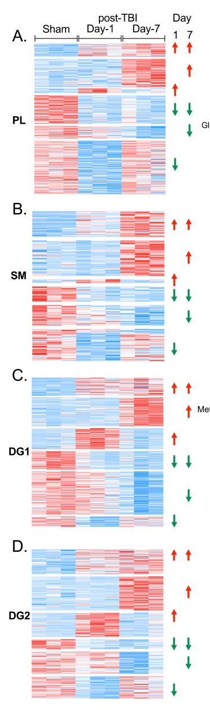

Damage to the brain caused by an external mechanical force: a blow to the head, rapid acceleration and deceleration, penetration, or blast. The injury unfolds in two stages. The primary injury is mechanical and happens in milliseconds: tissue is deformed, vessels tear, and axons are stretched beyond their tolerance. A secondary injury cascade then develops over hours to days, driven by excitotoxic glutamate release, spreading depolarisations, blood-brain barrier disruption, cytotoxic brain swelling and raised intracranial pressure, and systemic insults such as hypotension and hypoxia. In a proportion of survivors a chronic phase follows, with neuroinflammation and white matter degeneration that persist for years and an increased risk of dementia. Severity ranges from concussion to coma, and it is graded clinically by the Glasgow Coma Scale and the duration of loss of consciousness and post-traumatic amnesia rather than by mechanism.
Ask a research question about Traumatic Brain Injury. OpenScientist will conduct autonomous deep research using the Disorder Mechanisms Knowledge Base and PubMed literature (typically 10-30 minutes).
Do not include personal health information in your question. Questions and results are cached in your browser's local storage.
name: Traumatic Brain Injury
creation_date: "2026-10-01T04:00:00Z"
category: Complex
description: >-
Damage to the brain caused by an external mechanical force: a blow to the head,
rapid acceleration and deceleration, penetration, or blast. The injury unfolds
in two stages. The primary injury is mechanical and happens in milliseconds:
tissue is deformed, vessels tear, and axons are stretched beyond their tolerance.
A secondary injury cascade then develops over hours to days, driven by
excitotoxic glutamate release, spreading depolarisations, blood-brain barrier
disruption, cytotoxic brain swelling and raised intracranial pressure, and
systemic insults such as hypotension and hypoxia. In a proportion of survivors
a chronic phase follows, with neuroinflammation and white matter degeneration
that persist for years and an increased risk of dementia. Severity ranges from
concussion to coma, and it is graded clinically by the Glasgow Coma Scale and
the duration of loss of consciousness and post-traumatic amnesia rather than
by mechanism.
synonyms:
- TBI
- head injury
disease_term:
preferred_term: traumatic brain injury
term:
id: MONDO:0858950
label: traumatic brain injury
notes: >-
Modelling scope. This entry follows the injury granularity rule in design
decision 3f: traumatic brain injury is curated as an entry in its own right
because the tissue response to the injury, not only its late sequelae, is the
clinical entity that is managed and studied. Severity (mild, moderate, severe)
is a gradient of one exposure and is described in the environmental record and
the progression phases, not split into subtypes. Focal contusion and diffuse
axonal injury usually co-occur in the same patient, so they are modelled as
parallel branches from the mechanical injury node rather than as subtypes.
Shared cascades are not re-derived here: the axonal branch conforms to
focal_axonal_injury_wallerian_degeneration, barrier disruption to
blood_brain_barrier_breakdown, glutamate release and secondary neuronal loss to
glutamate_excitotoxicity, and chronic glial activation to
neuroinflammation_glial_activation. Two downstream disorders are curated
separately because each runs on its own mechanism once triggered:
Post-Traumatic_Epilepsy and Chronic_Traumatic_Encephalopathy.
Brain swelling. The cited human diffusion MRI studies find the swelling that
raises intracranial pressure after severe injury to be predominantly cellular
(cytotoxic) rather than vasogenic, so the swelling node is not drawn as a
consequence of barrier disruption, even though barrier disruption is
documented in the same patients.
Persistent symptoms not yet curated. Depression, anxiety, irritability,
sleep disturbance, dizziness and fatigue are common after injury, including
mild injury, but are not yet entered as phenotypes because no source cited
here gives their frequencies or a mechanism linking them to the nodes above.
APOE e4 has been studied as a modifier of outcome after injury, with
inconsistent replication, and is likewise not entered as a genetic record.
Exposure binding. The mechanical injury is left without an exposure_term. ECTO
has no term for mechanical or traumatic injury: searches of the local ECTO
build for l~injur, l~trauma, l~concuss, l~impact, l~crush, l~collision,
l~acceleration and l~force returned no exposure class. XCO:0000968
(experimental traumatic brain injury) exists but names an experimental
procedure in animals, not a human exposure.
pathophysiology:
- name: Rapid Head Acceleration and Brain Tissue Deformation
biological_scale: TISSUE
description: >-
The primary, mechanical injury. Impact or inertial loading of the head
deforms brain tissue within milliseconds. Axons, which are viscoelastic and
tolerate slow stretch, fail under rapid deformation, and strain concentrates
at predictable sites such as the depths of cortical sulci and the
grey-white matter boundary. Where the load tears vessels or bruises cortex
the result is a focal lesion; where it shears white matter tracts the result
is diffuse axonal injury.
locations:
- preferred_term: brain
term:
id: UBERON:0000955
label: brain
evidence:
- reference: PMID:16222127
reference_title: Diffuse axonal injury in head trauma.
supports: SUPPORT
evidence_source: OTHER
snippet: >-
Although axons are supple under normal conditions, they become brittle
when exposed to rapid deformations associated with brain trauma.
explanation: >-
States the biomechanical basis of the primary injury: axonal tolerance
depends on loading rate, which is why rapid head acceleration injures
axons.
- reference: PMID:28043957
reference_title: Computational modelling of traumatic brain injury predicts
the location of chronic traumatic encephalopathy pathology.
supports: SUPPORT
evidence_source: COMPUTATIONAL
snippet: >-
The computational models predicted large strain most prominent at the
depths of sulci.
explanation: >-
A finite-element head model shows that tissue deformation is not uniform
but concentrates at the depths of sulci.
downstream:
- target: Focal Contusion and Intracranial Haemorrhage
causal_link_type: DIRECT
description: >-
Where the load bruises cortex or tears bridging and parenchymal vessels,
the primary injury produces contusions and intracranial haematomas.
evidence:
- reference: PMID:9414327
reference_title: A population-based study of seizures after traumatic brain
injuries.
supports: SUPPORT
evidence_source: HUMAN_CLINICAL
snippet: >-
severe (loss of consciousness or amnesia for more than 24 hours, subdural
hematoma, or brain contusion)
explanation: >-
Subdural haematoma and contusion are the focal lesions of head trauma
that define severe injury in this population-based cohort.
- reference: PMID:16174940
reference_title: 'The contrecoup-coup phenomenon: a new understanding of
the mechanism of closed head injury.'
supports: SUPPORT
evidence_source: OTHER
directness: INDIRECT
snippet: >-
During the process of closed head injury, the brain parenchyma is
initially displaced away from the site of skull impact and toward the
contrecoup site resulting in the more severe brain contusion.
explanation: >-
Gives the mechanical route from impact to contusion: the brain is
displaced within the skull and bruised against it. Indirect because the
conclusion comes from a physical model with fluids of brain and CSF
density, not from patients.
- target: Diffuse Axonal Injury
causal_link_type: DIRECT
description: >-
Shear and stretch of white matter tracts during rapid acceleration damages
the axonal cytoskeleton.
evidence:
- reference: PMID:16222127
reference_title: Diffuse axonal injury in head trauma.
supports: SUPPORT
evidence_source: OTHER
snippet: >-
rapid stretch of axons can damage the axonal cytoskeleton resulting in a
loss of elasticity and impairment of axoplasmic transport
explanation: >-
Links rapid tissue deformation directly to cytoskeletal axonal damage.
- reference: PMID:33454735
reference_title: 'From biomechanics to pathology: predicting axonal injury
from patterns of strain after traumatic brain injury.'
supports: SUPPORT
evidence_source: MODEL_ORGANISM
snippet: >-
Linear mixed effects regression analyses showed that mechanical strain
and strain rate were significant predictors of in vivo MRI and histology
changes.
explanation: >-
In a rat controlled cortical impact model, the strain computed by a
finite-element model predicted where white matter and glial injury
developed, tying the mechanical event to the axonal lesion.
- target: Blood-Brain Barrier Disruption
causal_link_type: DIRECT
description: >-
The injury disrupts the blood-brain barrier, documented in human brain
tissue from the acute phase onward.
evidence:
- reference: PMID:26574669
reference_title: Blood-Brain Barrier Disruption Is an Early Event That May
Persist for Many Years After Traumatic Brain Injury in Humans.
supports: SUPPORT
evidence_source: HUMAN_CLINICAL
snippet: >-
These preliminary data demonstrate evidence of widespread BBB disruption
in a proportion of TBI patients emerging in the acute phase
explanation: >-
Autopsy evidence that barrier disruption follows a single moderate or
severe injury in humans.
- name: Focal Contusion and Intracranial Haemorrhage
biological_scale: TISSUE
description: >-
Cortical contusions and extra-axial (subdural, epidural) or intraparenchymal
haematomas. Bleeding can continue and expand for hours after the impact,
which is the basis for early antifibrinolytic treatment, and an expanding
mass raises intracranial pressure and can cause herniation.
locations:
- preferred_term: cerebral cortex
term:
id: UBERON:0000956
label: cerebral cortex
evidence:
- reference: PMID:31623894
reference_title: 'Effects of tranexamic acid on death, disability, vascular
occlusive events and other morbidities in patients with acute traumatic
brain injury (CRASH-3): a randomised, placebo-controlled trial.'
supports: SUPPORT
evidence_source: HUMAN_CLINICAL
snippet: >-
Intracranial bleeding is common after traumatic brain injury (TBI) and can
cause brain herniation and death.
explanation: >-
Establishes intracranial bleeding as a common and lethal component of the
injury.
downstream:
- target: Cerebral Contusion
causal_link_type: DIRECT
description: The cortical bruise is the clinical and imaging form of this node.
evidence:
- reference: PMID:9414327
reference_title: A population-based study of seizures after traumatic brain
injuries.
supports: SUPPORT
evidence_source: HUMAN_CLINICAL
snippet: >-
severe (loss of consciousness or amnesia for more than 24 hours, subdural
hematoma, or brain contusion)
explanation: >-
Names brain contusion as a lesion of head injury, the clinical form this node
takes.
- target: Subdural Hemorrhage
causal_link_type: DIRECT
description: >-
Tearing of bridging veins produces the subdural haematoma, one of the
haemorrhages this node covers.
evidence:
- reference: PMID:9414327
reference_title: A population-based study of seizures after traumatic brain
injuries.
supports: SUPPORT
evidence_source: HUMAN_CLINICAL
snippet: >-
severe (loss of consciousness or amnesia for more than 24 hours, subdural
hematoma, or brain contusion)
explanation: >-
Names subdural haematoma as a lesion of head injury, the clinical form this node
takes.
- target: Intracranial Hemorrhage
causal_link_type: DIRECT
description: Intracranial bleeding is the clinical form of this node.
evidence:
- reference: PMID:31623894
reference_title: 'Effects of tranexamic acid on death, disability, vascular
occlusive events and other morbidities in patients with acute traumatic
brain injury (CRASH-3): a randomised, placebo-controlled trial.'
supports: SUPPORT
evidence_source: HUMAN_CLINICAL
snippet: >-
Intracranial bleeding is common after traumatic brain injury (TBI)
explanation: Intracranial bleeding is the clinical form this node takes.
- target: Excitotoxic Glutamate Release
causal_link_type: DIRECT
description: >-
Extracellular glutamate rises most in patients with focal contusions and
secondary ischaemia.
evidence:
- reference: PMID:9761042
reference_title: Factors affecting excitatory amino acid release following
severe human head injury.
supports: SUPPORT
evidence_source: HUMAN_CLINICAL
snippet: >-
Secondary ischemic brain injury and focal contusions were most strongly
associated with high EAA levels
explanation: >-
Cerebral microdialysis in severely injured patients links focal
contusion to high extracellular excitatory amino acid levels.
- target: Spreading Depolarisations
causal_link_type: DIRECT
description: >-
Spreading depolarisations arise in injured grey matter, typically around
contusions in patients who need surgery.
evidence:
- reference: PMID:22056157
reference_title: 'Spreading depolarisations and outcome after traumatic
brain injury: a prospective observational study.'
supports: SUPPORT
evidence_source: HUMAN_CLINICAL
snippet: >-
Pathological waves of spreading mass neuronal depolarisation arise
repeatedly in injured, but potentially salvageable, grey matter in
50-60% of patients after traumatic brain injury (TBI).
explanation: >-
Places spreading depolarisations in injured grey matter after TBI.
- target: Cytotoxic Brain Swelling and Raised Intracranial Pressure
causal_link_type: DIRECT
description: >-
Expanding haematoma adds intracranial volume and can cause herniation.
evidence:
- reference: PMID:31623894
reference_title: 'Effects of tranexamic acid on death, disability, vascular
occlusive events and other morbidities in patients with acute traumatic
brain injury (CRASH-3): a randomised, placebo-controlled trial.'
supports: SUPPORT
evidence_source: HUMAN_CLINICAL
snippet: >-
Intracranial bleeding is common after traumatic brain injury (TBI) and
can cause brain herniation and death.
explanation: >-
Herniation is the end point of uncontrolled intracranial mass effect.
- name: Diffuse Axonal Injury
conforms_to: "focal_axonal_injury_wallerian_degeneration#Focal Axonal Injury"
biological_scale: CELLULAR
description: >-
Multifocal injury to axons in the cerebral white matter, corpus callosum and
brainstem caused by inertial shear. Damaged axons lose transport, swell into
varicosities and bulbs that accumulate transported proteins, and may later
disconnect; current understanding treats most disconnection as a delayed,
biochemically driven secondary axotomy rather than immediate tearing. It is a
principal determinant of loss of consciousness and of long-term outcome, and
it is hard to see on conventional imaging. In this entry the node is the
trauma-specific instance of the module's focal axonal injury trigger.
locations:
- preferred_term: cerebral white matter
term:
id: UBERON:0002437
label: cerebral hemisphere white matter
- preferred_term: corpus callosum
term:
id: UBERON:0002336
label: corpus callosum
cell_types:
- preferred_term: neuron
term:
id: CL:0000540
label: neuron
biological_processes:
- preferred_term: response to axon injury
term:
id: GO:0048678
label: response to axon injury
evidence:
- reference: PMID:2767623
reference_title: 'Diffuse axonal injury in head injury: definition, diagnosis
and grading.'
supports: SUPPORT
evidence_source: HUMAN_CLINICAL
snippet: >-
Diffuse axonal injury was identified in 122 of a series of 434 fatal
non-missile head injuries
explanation: >-
Neuropathological series establishing diffuse axonal injury as common in
fatal closed head injury.
- reference: PMID:16222127
reference_title: Diffuse axonal injury in head trauma.
supports: SUPPORT
evidence_source: OTHER
snippet: >-
Subsequent swelling of the axon occurs in discrete bulb formations or in
elongated varicosities that accumulate transported proteins.
explanation: >-
Describes the transport failure and axonal swelling that follow the
mechanical insult.
- reference: PMID:33006648
reference_title: 'Traumatic axonal injury (TAI): definitions, pathophysiology
and imaging-a narrative review.'
supports: SUPPORT
evidence_source: OTHER
snippet: >-
This theory has now been partially abandoned in favor of a more refined
theory involving biochemical processes such as protein cleavage and DNA
breakdown, ultimately leading to an inflammation cascade and cell
apoptosis, a process now described as secondary axotomy.
explanation: >-
Supports treating axonal disconnection as a delayed biochemical process
rather than immediate mechanical tearing, which is what the module models.
downstream:
- target: White Matter Degeneration and Circuit Disconnection
causal_link_type: DIRECT
description: >-
Swollen axons disconnect and degenerate, and white matter is lost over the
following months and years.
evidence:
- reference: PMID:16222127
reference_title: Diffuse axonal injury in head trauma.
supports: SUPPORT
evidence_source: OTHER
snippet: >-
Ultimately, swollen axons may become disconnected and contribute to
additional neuropathologic changes in brain tissue.
explanation: >-
Links axonal swelling to disconnection and wider tissue damage.
- target: Loss of Consciousness
causal_link_type: DIRECT
description: >-
Diffuse axonal injury is thought to account for much of the clinical
deficit after closed head injury, including loss of consciousness; it was
historically defined clinically by prolonged unconsciousness without a mass
lesion.
evidence:
- reference: PMID:16222127
reference_title: Diffuse axonal injury in head trauma.
supports: SUPPORT
evidence_source: OTHER
directness: INDIRECT
snippet: >-
DAI may largely account for the clinical manifestations of brain trauma.
explanation: >-
A review-level statement attributing the clinical deficit, including
disturbed consciousness, largely to diffuse axonal injury.
- target: Coma
causal_link_type: DIRECT
description: >-
Widespread axonal injury disconnects the networks that sustain arousal,
and prolonged unconsciousness without a mass lesion was the original
clinical definition of diffuse axonal injury.
evidence:
- reference: PMID:33006648
reference_title: 'Traumatic axonal injury (TAI): definitions,
pathophysiology and imaging-a narrative review.'
supports: SUPPORT
evidence_source: OTHER
directness: INDIRECT
snippet: >-
In the past, DAI (diffuse axonal injury) was defined as prolonged (> 6 h)
loss of consciousness (LOC), without a visible mass lesion.
explanation: >-
The historical clinical definition ties diffuse axonal injury to
prolonged unconsciousness in the absence of a focal mass; indirect
because a definition is not a demonstration of mechanism.
- name: Blood-Brain Barrier Disruption
conforms_to: "blood_brain_barrier_breakdown#Blood-Brain Barrier Permeability Increase"
biological_scale: TISSUE
description: >-
Leakage of plasma proteins such as fibrinogen and immunoglobulin G into the
brain parenchyma, seen in a proportion of patients from the acute phase and,
strikingly, in a similar proportion of survivors examined years after a
single injury. Whether this persistent leakage drives late
neurodegeneration is open.
locations:
- preferred_term: cerebral cortex
term:
id: UBERON:0000956
label: cerebral cortex
evidence:
- reference: PMID:26574669
reference_title: Blood-Brain Barrier Disruption Is an Early Event That May
Persist for Many Years After Traumatic Brain Injury in Humans.
supports: SUPPORT
evidence_source: HUMAN_CLINICAL
snippet: >-
After TBI, 40% of patients dying in the acute phase and 47% of those
surviving a year or more from injury showed multifocal, abnormal,
perivascular, and parenchymal fibrinogen and immunoglobulin G
immunostaining localized to the gray matter
explanation: >-
Quantifies barrier disruption in the acute phase and its persistence in
long-term survivors.
- name: Excitotoxic Glutamate Release
conforms_to: "glutamate_excitotoxicity#Excessive Glutamatergic Stimulation and Impaired Glutamate Clearance"
biological_scale: TISSUE
description: >-
Extracellular glutamate and other excitatory amino acids rise to many times
normal in a subset of severely injured patients, most in those with
contusions or secondary ischaemia, and high levels track raised intracranial
pressure and poor outcome. The release correlates with structural amino
acids, which suggests it reflects membrane damage as much as vesicular
release.
biological_processes:
- preferred_term: glutamate secretion
term:
id: GO:0014047
label: glutamate secretion
evidence:
- reference: PMID:9761042
reference_title: Factors affecting excitatory amino acid release following
severe human head injury.
supports: SUPPORT
evidence_source: HUMAN_CLINICAL
snippet: >-
The levels of EAAs were increased up to 50 times normal in 30% of the
patients
explanation: >-
Direct microdialysis measurement of excitatory amino acid release in
severely head-injured patients.
downstream:
- target: Secondary Neuronal Loss
causal_link_type: INDIRECT_KNOWN_INTERMEDIATES
description: >-
Glutamate excess drives calcium overload and excitotoxic neuronal death,
the cascade modelled in glutamate_excitotoxicity.
evidence:
- reference: PMID:9761042
reference_title: Factors affecting excitatory amino acid release following
severe human head injury.
supports: SUPPORT
evidence_source: HUMAN_CLINICAL
directness: INDIRECT
snippet: >-
The magnitude of EAA release in patients with focal contusions and
ischemic events may be sufficient to exacerbate neuronal damage
explanation: >-
The authors infer, from measured concentrations, that release is large
enough to add neuronal damage; the neuronal death itself was not
measured.
- name: Spreading Depolarisations
biological_scale: TISSUE
description: >-
Waves of near-complete neuronal and glial depolarisation that propagate
slowly through injured cortex, recorded by electrocorticography in about
half of patients undergoing surgery for TBI. Their occurrence, especially in
electrically silent cortex, independently predicts unfavourable outcome.
No GO term describes a spreading depolarisation, so the node carries no
process binding.
locations:
- preferred_term: cerebral cortex
term:
id: UBERON:0000956
label: cerebral cortex
evidence:
- reference: PMID:22056157
reference_title: 'Spreading depolarisations and outcome after traumatic brain
injury: a prospective observational study.'
supports: SUPPORT
evidence_source: HUMAN_CLINICAL
snippet: >-
Spreading depolarisations were associated with unfavourable outcome, after
controlling for conventional prognostic variables.
explanation: >-
Independent association of spreading depolarisations with poor outcome in
a prospective multicentre cohort.
downstream:
- target: Secondary Neuronal Loss
causal_link_type: INDIRECT_UNKNOWN_INTERMEDIATES
description: >-
Repeated depolarisations in metabolically compromised cortex are thought to
extend the lesion. The cited study shows association with outcome, not
neuronal death directly.
evidence:
- reference: PMID:22056157
reference_title: 'Spreading depolarisations and outcome after traumatic
brain injury: a prospective observational study.'
supports: SUPPORT
evidence_source: HUMAN_CLINICAL
directness: INDIRECT
snippet: >-
The possibility that spreading depolarisations have adverse effects on
the traumatically injured brain, and therefore might be a target in the
treatment of TBI, deserves further research.
explanation: >-
The authors frame a harmful effect on injured tissue as a hypothesis
consistent with, but not proven by, their outcome association.
- name: Secondary Systemic Insults (Hypotension and Hypoxia)
biological_scale: ORGANISM
description: >-
Arterial hypotension and hypoxaemia occurring between injury and the end of
resuscitation. They are common, independently associated with worse
mortality and morbidity, and the main preventable contributors to
secondary ischaemic brain damage.
evidence:
- reference: PMID:8459458
reference_title: The role of secondary brain injury in determining outcome
from severe head injury.
supports: SUPPORT
evidence_source: HUMAN_CLINICAL
snippet: >-
Hypotension was profoundly detrimental, occurring in 34.6% of these
patients and associated with a 150% increase in mortality.
explanation: >-
Traumatic Coma Data Bank analysis quantifying the frequency and impact of
hypotension after severe head injury.
downstream:
- target: Secondary Neuronal Loss
causal_link_type: INDIRECT_KNOWN_INTERMEDIATES
description: >-
Systemic hypotension and hypoxia reduce oxygen delivery to injured brain
and add ischaemic damage.
evidence:
- reference: PMID:8459458
reference_title: The role of secondary brain injury in determining outcome
from severe head injury.
supports: SUPPORT
evidence_source: HUMAN_CLINICAL
directness: INDIRECT
snippet: >-
Hypoxia and hypotension are common and detrimental secondary brain
insults.
explanation: >-
Identifies both as secondary brain insults; the link to neuronal loss is
inferred from outcome rather than measured in tissue.
- name: Cytotoxic Brain Swelling and Raised Intracranial Pressure
biological_scale: TISSUE
description: >-
Brain swelling after severe injury, measured by diffusion MRI in patients,
is predominantly cellular rather than vasogenic, and it occurs in tissue
whose blood flow is above the ischaemic range. Swelling and mass lesions
together raise intracranial pressure, which when refractory is lethal and is
the target of tiered medical treatment and decompressive craniectomy.
locations:
- preferred_term: brain
term:
id: UBERON:0000955
label: brain
evidence:
- reference: PMID:16703876
reference_title: Predominance of cellular edema in traumatic brain swelling
in patients with severe head injuries.
supports: SUPPORT
evidence_source: HUMAN_CLINICAL
snippet: >-
The brain swelling observed in patients with TBI appears to be
predominantly cellular, as signaled by low ADC values in brain tissue with
high levels of water content.
explanation: >-
Diffusion MRI in severely injured patients identifies the swelling as
cellular rather than vasogenic.
- reference: PMID:16671417
reference_title: 'Traumatic brain edema in diffuse and focal injury: cellular
or vasogenic?'
supports: SUPPORT
evidence_source: HUMAN_CLINICAL
snippet: >-
it is concluded that the predominant form of edema responsible for brain
swelling and raised ICP is cellular in nature
explanation: >-
Links the cellular edema directly to raised intracranial pressure.
downstream:
- target: Increased Intracranial Pressure
causal_link_type: DIRECT
description: Brain swelling raises intracranial pressure.
evidence:
- reference: PMID:16671417
reference_title: 'Traumatic brain edema in diffuse and focal injury:
cellular or vasogenic?'
supports: SUPPORT
evidence_source: HUMAN_CLINICAL
snippet: >-
it is concluded that the predominant form of edema responsible for brain
swelling and raised ICP is cellular in nature
explanation: Swelling is the substrate of the raised pressure.
- name: Secondary Neuronal Loss
conforms_to: "glutamate_excitotoxicity#Excitotoxic Neuronal Death"
biological_scale: CELLULAR
description: >-
Death of neurons beyond the primary lesion during the hours and days after
injury, to which excitotoxicity, spreading depolarisations and systemic
ischaemic insults all contribute. It is the stage that neuroprotective drug
trials have tried, so far unsuccessfully, to prevent.
cell_types:
- preferred_term: neuron
term:
id: CL:0000540
label: neuron
evidence:
- reference: PMID:9761042
reference_title: Factors affecting excitatory amino acid release following
severe human head injury.
supports: SUPPORT
evidence_source: HUMAN_CLINICAL
directness: INDIRECT
snippet: >-
Sustained high ICP and poor outcome were significantly correlated to high
levels of EAAs
explanation: >-
Secondary injury markers track poor outcome; neuronal death is the
presumed intermediate and was not measured directly.
downstream:
- target: Cognitive impairment
causal_link_type: INDIRECT_UNKNOWN_INTERMEDIATES
description: >-
Loss of neurons and circuits underlies persisting cognitive deficits.
evidence:
- reference: PMID:35173018
reference_title: 'Cognitive Outcome 1 Year After Mild Traumatic Brain
Injury: Results From the TRACK-TBI Study.'
supports: SUPPORT
evidence_source: HUMAN_CLINICAL
directness: INDIRECT
snippet: >-
At 1 year, 13.5% of participants with mTBI had a poor cognitive outcome
vs 4.5% of controls (p = 0.003).
explanation: >-
Establishes the cognitive consequence; the attribution to neuronal loss
is an inference, not a measurement in this cohort.
- name: Persistent Neuroinflammation
conforms_to: "neuroinflammation_glial_activation#Reactive Microglial and Astrocytic Activation"
biological_scale: TISSUE
description: >-
Dense reactive microglia in the white matter that are absent acutely but
appear by three months and persist for up to 18 years in about a quarter of
long-term survivors of a single injury. Whether this inflammation is a
response to ongoing white matter degeneration or a driver of it is
unresolved.
cell_types:
- preferred_term: microglial cell
term:
id: CL:0000129
label: microglial cell
biological_processes:
- preferred_term: microglial cell activation
term:
id: GO:0001774
label: microglial cell activation
- preferred_term: neuroinflammatory response
term:
id: GO:0150076
label: neuroinflammatory response
locations:
- preferred_term: corpus callosum
term:
id: UBERON:0002336
label: corpus callosum
evidence:
- reference: PMID:23365092
reference_title: Inflammation and white matter degeneration persist for years
after a single traumatic brain injury.
supports: SUPPORT
evidence_source: HUMAN_CLINICAL
snippet: >-
these reactive microglia were present in 28% of cases with survival of >1
year and up to 18 years post-trauma
explanation: >-
Autopsy evidence of microglial activation persisting for years after a
single injury.
downstream:
- target: White Matter Degeneration and Circuit Disconnection
causal_link_type: INDIRECT_UNKNOWN_INTERMEDIATES
description: >-
Persistent inflammation co-localises with ongoing white matter
degradation. The direction of causation is not established, which this
entry records as a knowledge gap.
evidence:
- reference: PMID:23365092
reference_title: Inflammation and white matter degeneration persist for
years after a single traumatic brain injury.
supports: SUPPORT
evidence_source: HUMAN_CLINICAL
directness: INDIRECT
snippet: >-
In cases displaying this inflammatory pathology, evidence of ongoing
white matter degradation could also be observed.
explanation: >-
Co-occurrence in the same cases supports an association, not a causal
direction.
- name: White Matter Degeneration and Circuit Disconnection
conforms_to: "focal_axonal_injury_wallerian_degeneration#Disconnection of Neural Circuits"
biological_scale: TISSUE
description: >-
Progressive loss of white matter after the injury, measurable as thinning of
the corpus callosum in long-term survivors, which disconnects cortical
networks. It is the structural substrate proposed for persisting cognitive
deficits and for the increased risk of late neurodegeneration.
locations:
- preferred_term: corpus callosum
term:
id: UBERON:0002336
label: corpus callosum
evidence:
- reference: PMID:23365092
reference_title: Inflammation and white matter degeneration persist for years
after a single traumatic brain injury.
supports: SUPPORT
evidence_source: HUMAN_CLINICAL
snippet: >-
there was a 25% reduction in the corpus callosum thickness with survival >1
year post-injury
explanation: >-
Quantifies white matter loss in long-term survivors.
downstream:
- target: Cognitive impairment
causal_link_type: INDIRECT_UNKNOWN_INTERMEDIATES
description: >-
Disconnection of white matter networks is the proposed substrate of
persisting cognitive deficits.
evidence:
- reference: PMID:35173018
reference_title: 'Cognitive Outcome 1 Year After Mild Traumatic Brain
Injury: Results From the TRACK-TBI Study.'
supports: SUPPORT
evidence_source: HUMAN_CLINICAL
directness: INDIRECT
snippet: >-
At 1 year, 13.5% of participants with mTBI had a poor cognitive outcome
vs 4.5% of controls (p = 0.003).
explanation: >-
Establishes the cognitive consequence of injury; its attribution to
white matter disconnection is inferred.
- target: Dementia
causal_link_type: INDIRECT_UNKNOWN_INTERMEDIATES
description: >-
Long-term white matter degeneration and inflammation are proposed links
between a single injury and later dementia.
evidence:
- reference: PMID:23365092
reference_title: Inflammation and white matter degeneration persist for
years after a single traumatic brain injury.
supports: SUPPORT
evidence_source: HUMAN_CLINICAL
directness: INDIRECT
snippet: >-
A single traumatic brain injury is associated with an increased risk of
dementia
explanation: >-
The study's premise ties single injury to dementia risk and examines
white matter degeneration as a candidate mechanism.
phenotypes:
- name: Loss of Consciousness
category: Neurologic
description: >-
Transient or prolonged loss of consciousness at the time of injury. Its
duration, together with that of post-traumatic amnesia, is a standard grade
of severity.
phenotype_term:
preferred_term: Loss of consciousness
term:
id: HP:0007185
label: Loss of consciousness
temporality: ACUTE
evidence:
- reference: PMID:9414327
reference_title: A population-based study of seizures after traumatic brain
injuries.
supports: SUPPORT
evidence_source: HUMAN_CLINICAL
snippet: >-
Injuries were classified as mild (loss of consciousness or amnesia lasting
less than 30 minutes), moderate (loss of consciousness for 30 minutes to
24 hours or a skull fracture)
explanation: >-
Loss of consciousness is the feature by which injury severity is graded.
- name: Coma
category: Neurologic
description: >-
Severe traumatic brain injury is conventionally defined by a Glasgow Coma
Scale score of 8 or less, that is, by coma.
phenotype_term:
preferred_term: Coma
term:
id: HP:0001259
label: Coma
temporality: ACUTE
evidence:
- reference: PMID:25493978
reference_title: A clinical trial of progesterone for severe traumatic brain
injury.
supports: SUPPORT
evidence_source: HUMAN_CLINICAL
snippet: >-
with severe TBI (Glasgow Coma Scale score, ≤8
explanation: >-
Uses the coma-range Glasgow Coma Scale score as the definition of severe
injury.
- name: Post-Traumatic Amnesia
category: Neurologic
description: >-
A period of disorientation and failure to lay down new memories after the
injury; its duration grades severity alongside loss of consciousness. No HPO
term names post-traumatic amnesia, so the phenotype is bound to the broader
memory impairment term.
phenotype_term:
preferred_term: Post-traumatic amnesia
term:
id: HP:0002354
label: Memory impairment
temporality: ACUTE
evidence:
- reference: PMID:9414327
reference_title: A population-based study of seizures after traumatic brain
injuries.
supports: SUPPORT
evidence_source: HUMAN_CLINICAL
snippet: >-
Injuries were classified as mild (loss of consciousness or amnesia lasting
less than 30 minutes)
explanation: >-
Amnesia duration is one of the two clinical features used to grade
severity.
- name: Cerebral Contusion
category: Neurologic
phenotype_term:
preferred_term: Cerebral contusion
term:
id: HP:6000141
label: Cerebral contusion
evidence:
- reference: PMID:9414327
reference_title: A population-based study of seizures after traumatic brain
injuries.
supports: SUPPORT
evidence_source: HUMAN_CLINICAL
snippet: >-
severe (loss of consciousness or amnesia for more than 24 hours, subdural
hematoma, or brain contusion)
explanation: Brain contusion is a defining lesion of severe injury.
- name: Subdural Hemorrhage
category: Neurologic
phenotype_term:
preferred_term: Subdural hematoma
term:
id: HP:0100309
label: Subdural hemorrhage
evidence:
- reference: PMID:9414327
reference_title: A population-based study of seizures after traumatic brain
injuries.
supports: SUPPORT
evidence_source: HUMAN_CLINICAL
snippet: >-
severe (loss of consciousness or amnesia for more than 24 hours, subdural
hematoma, or brain contusion)
explanation: Subdural haematoma is a defining lesion of severe injury.
- name: Intracranial Hemorrhage
category: Neurologic
phenotype_term:
preferred_term: Intracranial hemorrhage
term:
id: HP:0002170
label: Intracranial hemorrhage
temporality: ACUTE
evidence:
- reference: PMID:31623894
reference_title: 'Effects of tranexamic acid on death, disability, vascular
occlusive events and other morbidities in patients with acute traumatic
brain injury (CRASH-3): a randomised, placebo-controlled trial.'
supports: SUPPORT
evidence_source: HUMAN_CLINICAL
snippet: >-
Intracranial bleeding is common after traumatic brain injury (TBI)
explanation: Intracranial bleeding is a common feature of the injury.
- name: Increased Intracranial Pressure
category: Neurologic
description: >-
Raised intracranial pressure after severe injury, refractory to first-tier
measures in a subset of patients.
phenotype_term:
preferred_term: Increased intracranial pressure
term:
id: HP:0002516
label: Increased intracranial pressure
temporality: ACUTE
evidence:
- reference: PMID:27602507
reference_title: Trial of Decompressive Craniectomy for Traumatic
Intracranial Hypertension.
supports: SUPPORT
evidence_source: HUMAN_CLINICAL
snippet: >-
with traumatic brain injury and refractory elevated intracranial pressure
(>25 mm Hg)
explanation: >-
Refractory intracranial hypertension after TBI is common enough to define
the population of a 408-patient trial.
- name: Headache
category: Neurologic
description: >-
The most common persisting symptom, reported by most patients in the first
year and not related to injury severity.
phenotype_term:
preferred_term: Post-traumatic headache
term:
id: HP:0002315
label: Headache
evidence:
- reference: PMID:21732765
reference_title: Natural history of headache after traumatic brain injury.
supports: SUPPORT
evidence_source: HUMAN_CLINICAL
snippet: >-
71% of participants reported headache during the first year after injury
explanation: >-
Prospective cohort quantifying post-traumatic headache.
- name: Cognitive impairment
category: Neurologic
description: >-
Persisting deficits in cognition, present at one year even in a meaningful
fraction of patients with mild injury.
phenotype_term:
preferred_term: Cognitive impairment
term:
id: HP:0100543
label: Cognitive impairment
temporality: CHRONIC
evidence:
- reference: PMID:35173018
reference_title: 'Cognitive Outcome 1 Year After Mild Traumatic Brain Injury:
Results From the TRACK-TBI Study.'
supports: SUPPORT
evidence_source: HUMAN_CLINICAL
snippet: >-
At 1 year, 13.5% of participants with mTBI had a poor cognitive outcome vs
4.5% of controls (p = 0.003).
explanation: >-
Poor cognitive outcome is three times as common after mild injury as in
controls.
- name: Early Post-Traumatic Seizures
category: Neurologic
description: >-
Acute symptomatic seizures in the first week after injury. These are
provoked seizures, distinct from the later epilepsy curated separately as
Post-Traumatic_Epilepsy.
phenotype_term:
preferred_term: Early post-traumatic seizure
term:
id: HP:0001250
label: Seizure
temporality: ACUTE
evidence:
- reference: PMID:2115976
reference_title: A randomized, double-blind study of phenytoin for the
prevention of post-traumatic seizures.
supports: SUPPORT
evidence_source: HUMAN_CLINICAL
snippet: >-
Between drug loading and day 7, 3.6 percent of the patients assigned to
phenytoin had seizures, as compared with 14.2 percent of patients assigned
to placebo
explanation: >-
Early seizures occur in about one in seven untreated patients after
severe injury.
- name: Dementia
category: Neurologic
description: >-
A long-term increase in the risk of all-cause dementia, highest in the first
months after injury and rising with the number of injuries.
phenotype_term:
preferred_term: Dementia
term:
id: HP:0000726
label: Dementia
evidence:
- reference: PMID:29653873
reference_title: 'Long-term risk of dementia among people with traumatic
brain injury in Denmark: a population-based observational cohort study.'
supports: SUPPORT
evidence_source: HUMAN_CLINICAL
snippet: >-
TBI was associated with an increased risk of dementia both compared with
people without a history of TBI and with people with non-TBI trauma.
explanation: >-
Nationwide cohort of 2.8 million people showing an increased dementia
risk after TBI, also against a non-head trauma comparison group.
environmental:
- name: Mechanical Head Trauma
presence: PRESENT
description: >-
An external mechanical force to the head: impact, rapid acceleration and
deceleration, penetration, or blast. Falls predominate in high-income
countries, particularly in people aged 65 and over, and road traffic
incidents in low- and middle-income countries. Severity is graded by the
clinical picture rather than by the force, which is rarely measured.
notes: >-
No exposure_term. ECTO has no mechanical or traumatic injury exposure class;
the searches are listed in the entry-level notes.
evidence:
- reference: PMID:36183712
reference_title: 'Traumatic brain injury: progress and challenges in
prevention, clinical care, and research.'
supports: SUPPORT
evidence_source: OTHER
snippet: >-
In HICs, most TBI is caused by falls, particularly in older people (aged
≥65 years), who often have comorbidities.
explanation: Identifies falls as the main cause in high-income countries.
- reference: PMID:36183712
reference_title: 'Traumatic brain injury: progress and challenges in
prevention, clinical care, and research.'
supports: SUPPORT
evidence_source: OTHER
snippet: >-
In LMICs, the occurrence of TBI is driven by road traffic incidents
explanation: >-
Identifies road traffic incidents as the main cause in low- and
middle-income countries.
influences_mechanisms:
- target: Rapid Head Acceleration and Brain Tissue Deformation
environmental_effect: TRIGGERS
causal_link_type: DIRECT
description: >-
The external force is what deforms the brain; it is the initiating event
of every downstream process in this entry.
evidence:
- reference: PMID:33454735
reference_title: 'From biomechanics to pathology: predicting axonal injury
from patterns of strain after traumatic brain injury.'
supports: SUPPORT
evidence_source: OTHER
quote_role: BACKGROUND
snippet: >-
White matter tracts are damaged by high shear forces during impact,
resulting in axonal injury
explanation: >-
States that the impact force produces the tissue shear that injures
white matter.
prevalence:
- population: Worldwide
measure_type: ANNUAL_INCIDENCE
rate_denominator: POPULATION_PER_YEAR
notes: >-
A modelled estimate of 69 million (95% CI 64-74 million) new cases each year
from all causes. The source gives regional rates but not a single worldwide
rate per 100,000, so none is asserted here.
evidence:
- reference: PMID:29701556
reference_title: Estimating the global incidence of traumatic brain injury.
supports: SUPPORT
evidence_source: HUMAN_CLINICAL
snippet: >-
Sixty-nine million (95% CI 64-74 million) individuals worldwide are
estimated to sustain a TBI each year.
explanation: Global annual incidence estimate.
- population: North America (WHO region), modelled estimate
measure_type: ANNUAL_INCIDENCE
prevalence_class: ABOVE_1_IN_1000
rate_per_100000: 1299
rate_low: 650
rate_high: 1947
rate_denominator: POPULATION_PER_YEAR
notes: >-
The highest regional incidence in the source, 1299 per 100,000 per year;
the source notes that regional rates are highest where data quality is
highest, so the regional ranking partly reflects ascertainment.
evidence:
- reference: PMID:29701556
reference_title: Estimating the global incidence of traumatic brain injury.
supports: SUPPORT
evidence_source: HUMAN_CLINICAL
snippet: >-
The overall incidence of TBI per 100,000 people was greatest in North
America (1299 cases, 95% CI 650-1947)
explanation: Regional annual incidence per 100,000.
progression:
- phase: Primary injury
age_range: Milliseconds to minutes after impact
notes: >-
Mechanical deformation of brain tissue, vessel tearing and axonal stretch.
Nothing done after the event can reverse it; prevention (helmets, fall and
road safety) is the only intervention at this phase.
evidence:
- reference: PMID:16222127
reference_title: Diffuse axonal injury in head trauma.
supports: SUPPORT
evidence_source: OTHER
snippet: >-
they become brittle when exposed to rapid deformations associated with
brain trauma
explanation: The primary injury is the mechanical failure of tissue at impact.
- phase: Secondary injury
age_range: Hours to days after injury
notes: >-
Expanding haemorrhage, excitotoxicity, spreading depolarisations, brain
swelling with raised intracranial pressure, and systemic hypotension and
hypoxia. This is the phase that acute care tries to limit.
evidence:
- reference: PMID:8459458
reference_title: The role of secondary brain injury in determining outcome
from severe head injury.
supports: SUPPORT
evidence_source: HUMAN_CLINICAL
snippet: >-
Hypoxia and hypotension are common and detrimental secondary brain
insults.
explanation: Characterises the preventable secondary insults of this phase.
- phase: Chronic phase
age_range: Months to decades after injury
notes: >-
Persistent neuroinflammation, white matter degeneration and, in some
survivors, barrier leakage, with persisting symptoms and an increased risk
of dementia. The 2022 Lancet Neurology Commission describes TBI as a chronic
disease as well as an acute condition.
evidence:
- reference: PMID:36183712
reference_title: 'Traumatic brain injury: progress and challenges in
prevention, clinical care, and research.'
supports: SUPPORT
evidence_source: OTHER
snippet: >-
TBI is increasingly documented not only as an acute condition but also as
a chronic disease with long-term consequences, including an increased risk
of late-onset neurodegeneration.
explanation: Supports a distinct chronic phase.
- reference: PMID:23365092
reference_title: Inflammation and white matter degeneration persist for years
after a single traumatic brain injury.
supports: SUPPORT
evidence_source: HUMAN_CLINICAL
snippet: >-
These data present striking evidence of persistent inflammation and
ongoing white matter degeneration for many years after just a single
traumatic brain injury in humans.
explanation: Tissue evidence for an active chronic phase.
treatments:
- name: Tranexamic Acid
description: >-
Antifibrinolytic given within three hours of injury to limit expansion of
intracranial bleeding. In the CRASH-3 trial it reduced head injury-related
death in mild-to-moderate injury but not in severe injury, and earlier
treatment was more effective.
therapeutic_modality: SMALL_MOLECULE
treatment_term:
preferred_term: Pharmacotherapy
term:
id: NCIT:C15986
label: Pharmacotherapy
therapeutic_agent:
- preferred_term: tranexamic acid
term:
id: CHEBI:48669
label: tranexamic acid
target_mechanisms:
- target: Focal Contusion and Intracranial Haemorrhage
treatment_effect: INHIBITS
description: Limits continued intracranial bleeding by inhibiting fibrinolysis.
evidence:
- reference: PMID:31623894
reference_title: 'Effects of tranexamic acid on death, disability, vascular
occlusive events and other morbidities in patients with acute traumatic
brain injury (CRASH-3): a randomised, placebo-controlled trial.'
supports: SUPPORT
evidence_source: HUMAN_CLINICAL
snippet: >-
Our results show that tranexamic acid is safe in patients with TBI and that
treatment within 3 h of injury reduces head injury-related death.
explanation: >-
Randomised evidence of benefit from early antifibrinolytic treatment.
- name: Decompressive Craniectomy
description: >-
Removal of part of the skull to relieve refractory intracranial
hypertension. It lowers pressure reliably; its effect on outcome depends on
the setting. As a last-tier treatment for refractory pressure it reduced
mortality but left more survivors in a vegetative state or severely
disabled, and used early in diffuse injury it worsened functional outcome.
therapeutic_modality: SURGERY
treatment_term:
preferred_term: Decompressive craniectomy
term:
id: NCIT:C51791
label: Craniectomy
target_mechanisms:
- target: Cytotoxic Brain Swelling and Raised Intracranial Pressure
treatment_effect: BYPASSES
description: >-
Relieves the pressure by enlarging the intracranial space rather than by
reducing the swelling itself.
evidence:
- reference: PMID:27602507
reference_title: Trial of Decompressive Craniectomy for Traumatic
Intracranial Hypertension.
supports: SUPPORT
evidence_source: HUMAN_CLINICAL
snippet: >-
At 6 months, decompressive craniectomy in patients with traumatic brain
injury and refractory intracranial hypertension resulted in lower
mortality and higher rates of vegetative state, lower severe disability,
and upper severe disability than medical care.
explanation: >-
Supports a mortality benefit as last-tier treatment, at the cost of more
severely disabled survivors.
- reference: PMID:21434843
reference_title: Decompressive craniectomy in diffuse traumatic brain injury.
supports: REFUTE
evidence_source: HUMAN_CLINICAL
snippet: >-
early bifrontotemporoparietal decompressive craniectomy decreased
intracranial pressure and the length of stay in the ICU but was associated
with more unfavorable outcomes
explanation: >-
Used early in diffuse injury, the operation lowered pressure but worsened
functional outcome, so it is not a general benefit.
- name: Corticosteroids
description: >-
Not recommended. High-dose methylprednisolone was given for decades on the
rationale of reducing brain swelling and inflammation; in the 10,008-patient
CRASH trial it increased death within two weeks.
therapeutic_modality: SMALL_MOLECULE
treatment_term:
preferred_term: Pharmacotherapy
term:
id: NCIT:C15986
label: Pharmacotherapy
therapeutic_agent:
- preferred_term: methylprednisolone
term:
id: CHEBI:6888
label: 6alpha-methylprednisolone
evidence:
- reference: PMID:15474134
reference_title: 'Effect of intravenous corticosteroids on death within 14
days in 10008 adults with clinically significant head injury (MRC CRASH
trial): randomised placebo-controlled trial.'
supports: REFUTE
evidence_source: HUMAN_CLINICAL
snippet: >-
Compared with placebo, the risk of death from all causes within 2 weeks
was higher in the group allocated corticosteroids (1052 [21.1%] vs 893
[17.9%] deaths; relative risk 1.18 [95% CI 1.09-1.27]; p=0.0001).
explanation: >-
Refutes benefit: in a 10,008-patient randomised trial, two-week mortality
was higher on corticosteroids than on placebo.
- name: Early Seizure Prophylaxis
description: >-
Phenytoin, or in current practice levetiracetam, given for about a week
after severe injury. In the pivotal randomised trial it cut seizures in the
first week from 14.2 to 3.6 percent but did not reduce later seizures, so it
suppresses early provoked seizures and does not prevent post-traumatic
epilepsy. The epilepsy is curated separately as Post-Traumatic_Epilepsy.
therapeutic_modality: SMALL_MOLECULE
treatment_term:
preferred_term: Pharmacotherapy
term:
id: NCIT:C15986
label: Pharmacotherapy
therapeutic_agent:
- preferred_term: phenytoin
term:
id: CHEBI:8107
label: phenytoin
- preferred_term: levetiracetam
term:
id: CHEBI:6437
label: levetiracetam
target_phenotypes:
- preferred_term: Early post-traumatic seizure
term:
id: HP:0001250
label: Seizure
evidence:
- reference: PMID:2115976
reference_title: A randomized, double-blind study of phenytoin for the
prevention of post-traumatic seizures.
supports: SUPPORT
evidence_source: HUMAN_CLINICAL
snippet: >-
Phenytoin exerts a beneficial effect by reducing seizures only during the
first week after severe head injury.
explanation: >-
Randomised evidence that prophylaxis reduces early seizures, and only
early seizures.
- reference: PMID:2115976
reference_title: A randomized, double-blind study of phenytoin for the
prevention of post-traumatic seizures.
supports: REFUTE
evidence_source: HUMAN_CLINICAL
snippet: >-
Between day 8 and the end of year 1, 21.5 percent of the phenytoin group
and 15.7 percent of the placebo group had seizures
explanation: >-
Refutes any effect on late seizures, which is why prophylaxis is not
continued to prevent epilepsy.
- name: Hyperosmolar Therapy
description: >-
Mannitol or hypertonic saline given to lower raised intracranial pressure,
in routine use in moderate to severe injury. Randomised evidence has not
shown that either agent improves functional outcome or survival, or that
one is better than the other, and continuous prophylactic hypertonic
saline did not improve six-month neurological outcome.
therapeutic_modality: SMALL_MOLECULE
treatment_term:
preferred_term: Pharmacotherapy
term:
id: NCIT:C15986
label: Pharmacotherapy
therapeutic_agent:
- preferred_term: mannitol
term:
id: CHEBI:29864
label: mannitol
- preferred_term: hypertonic saline
term:
id: CHEBI:26710
label: sodium chloride
target_mechanisms:
- target: Cytotoxic Brain Swelling and Raised Intracranial Pressure
treatment_effect: INHIBITS
description: >-
Draws water from brain tissue into the circulation to lower intracranial
pressure.
evidence:
- reference: PMID:37380894
reference_title: 'Hypertonic Saline Versus Other Intracranial-Pressure-Lowering
Agents for Patients with Acute Traumatic Brain Injury: A Systematic Review
and Meta-analysis.'
supports: SUPPORT
evidence_source: OTHER
quote_role: BACKGROUND
snippet: >-
Hyperosmolar therapies, such as hypertonic saline (HTS) and mannitol, are
in routine clinical use for lowering ICP in TBI.
explanation: >-
Establishes hyperosmolar therapy as standard treatment for raised
intracranial pressure in TBI.
- reference: PMID:37380894
reference_title: 'Hypertonic Saline Versus Other Intracranial-Pressure-Lowering
Agents for Patients with Acute Traumatic Brain Injury: A Systematic Review
and Meta-analysis.'
supports: REFUTE
evidence_source: OTHER
snippet: >-
We found no evidence of an effect of HTS on clinically important outcomes
and that HTS is associated with adverse hypernatremia.
explanation: >-
Meta-analysis of ten randomised trials finding no outcome benefit of
hypertonic saline over other pressure-lowering agents.
- reference: PMID:34032829
reference_title: 'Effect of Continuous Infusion of Hypertonic Saline vs
Standard Care on 6-Month Neurological Outcomes in Patients With Traumatic
Brain Injury: The COBI Randomized Clinical Trial.'
supports: REFUTE
evidence_source: HUMAN_CLINICAL
snippet: >-
treatment with continuous infusion of 20% hypertonic saline compared with
standard care did not result in a significantly better neurological
status at 6 months
explanation: >-
Prophylactic continuous hypertonic saline did not improve outcome in a
370-patient randomised trial.
- name: Haematoma Evacuation
description: >-
Craniotomy to remove a space-occupying haematoma. Prompt removal of a
significant subdural or extradural haematoma is established practice. For
traumatic intraparenchymal haemorrhage the benefit of early surgery is
uncertain: the only randomised trial, stopped early, found fewer deaths
with early surgery but a non-significant difference in unfavourable
outcome.
therapeutic_modality: SURGERY
treatment_term:
preferred_term: Craniotomy for haematoma evacuation
term:
id: NCIT:C15214
label: Craniotomy
target_mechanisms:
- target: Focal Contusion and Intracranial Haemorrhage
treatment_effect: INHIBITS
description: Removes the haematoma and its mass effect.
evidence:
- reference: PMID:25738794
reference_title: 'Early Surgery versus Initial Conservative Treatment in
Patients with Traumatic Intracerebral Hemorrhage (STITCH[Trauma]): The
First Randomized Trial.'
supports: SUPPORT
evidence_source: OTHER
quote_role: BACKGROUND
snippet: >-
Prompt surgical removal of significant subdural (SDH) and extradural
hemorrhage (EDH) is well established
explanation: >-
States that evacuation of significant extra-axial haematomas is
established practice.
- reference: PMID:25738794
reference_title: 'Early Surgery versus Initial Conservative Treatment in
Patients with Traumatic Intracerebral Hemorrhage (STITCH[Trauma]): The
First Randomized Trial.'
supports: SUPPORT
evidence_source: HUMAN_CLINICAL
snippet: >-
There were significantly more deaths in the first 6 months in the initial
conservative treatment group (33% vs. 15%; p=0.006).
explanation: >-
Randomised evidence of lower mortality with early surgery for traumatic
intraparenchymal haemorrhage, from a trial stopped early.
- name: Therapeutic Hypothermia
description: >-
Cooling to 32-35 degrees Celsius to lower intracranial pressure. It lowers
pressure but did not improve outcome, and functional outcome was worse than
with standard care in the Eurotherm3235 trial.
therapeutic_modality: OTHER
treatment_term:
preferred_term: Therapeutic hypothermia
term:
id: NCIT:C219994
label: Induction and Maintenance of Total Body Hypothermia
evidence:
- reference: PMID:26444221
reference_title: Hypothermia for Intracranial Hypertension after Traumatic
Brain Injury.
supports: REFUTE
evidence_source: HUMAN_CLINICAL
snippet: >-
therapeutic hypothermia plus standard care to reduce intracranial pressure
did not result in outcomes better than those with standard care alone
explanation: Refutes a functional benefit of hypothermia for raised pressure.
- name: Amantadine
description: >-
Given during rehabilitation to patients in a vegetative or minimally
conscious state weeks after injury. In a 184-patient randomised trial it
accelerated functional recovery during four weeks of treatment, but the
advantage was not sustained after the drug was stopped. It acts on recovery
of function rather than on any injury mechanism in this entry, so it carries
no target_mechanisms link.
therapeutic_modality: SMALL_MOLECULE
treatment_term:
preferred_term: Pharmacotherapy
term:
id: NCIT:C15986
label: Pharmacotherapy
therapeutic_agent:
- preferred_term: amantadine
term:
id: CHEBI:2618
label: amantadine
target_phenotypes:
- preferred_term: Coma
term:
id: HP:0001259
label: Coma
evidence:
- reference: PMID:22375973
reference_title: Placebo-controlled trial of amantadine for severe traumatic
brain injury.
supports: SUPPORT
evidence_source: HUMAN_CLINICAL
snippet: >-
Amantadine accelerated the pace of functional recovery during active
treatment in patients with post-traumatic disorders of consciousness.
explanation: >-
Randomised evidence that amantadine speeds recovery from prolonged
post-traumatic disorders of consciousness while it is given.
- reference: PMID:22375973
reference_title: Placebo-controlled trial of amantadine for severe traumatic
brain injury.
supports: REFUTE
evidence_source: HUMAN_CLINICAL
snippet: >-
The overall improvement in DRS scores between baseline and week 6 (2 weeks
after treatment was discontinued) was similar in the two groups.
explanation: >-
Contradicts a lasting benefit: by two weeks after stopping the drug, the
two groups had improved by the same amount.
diagnosis:
- name: Head CT
description: >-
Non-contrast CT is the first-line test to detect haemorrhage, contusion and
mass effect needing surgery. It is insensitive to diffuse axonal injury.
diagnosis_term:
preferred_term: Computed tomography of the head
term:
id: NCIT:C17204
label: Computed Tomography
evidence:
- reference: PMID:30054151
reference_title: 'Serum GFAP and UCH-L1 for prediction of absence of
intracranial injuries on head CT (ALERT-TBI): a multicentre observational
study.'
supports: SUPPORT
evidence_source: HUMAN_CLINICAL
snippet: >-
Detection of intracranial injuries relies on head CT, which is overused and
resource intensive.
explanation: Establishes head CT as the reference test for intracranial injury.
biochemical:
- name: Serum GFAP
presence: INCREASED
biomarker_term:
preferred_term: glial fibrillary acidic protein
term:
id: NCIT:C68804
label: Glial Fibrillary Acidic Protein
context: >-
Astroglial protein released into blood after brain injury. Measured within
12 hours together with UCH-L1, a negative combined result rules out
CT-visible intracranial injury with high sensitivity in patients with a
Glasgow Coma Scale score of 9-15. The combined test is used to avoid CT, not
to diagnose injury.
evidence:
- reference: PMID:30054151
reference_title: 'Serum GFAP and UCH-L1 for prediction of absence of
intracranial injuries on head CT (ALERT-TBI): a multicentre observational
study.'
supports: SUPPORT
evidence_source: HUMAN_CLINICAL
snippet: >-
These results show the high sensitivity and NPV of the UCH-L1 and GFAP
test.
explanation: >-
Validates the two-marker blood test, of which GFAP is one component, for
ruling out CT-visible injury.
- name: Serum UCH-L1
presence: INCREASED
biomarker_term:
preferred_term: ubiquitin C-terminal hydrolase L1
term:
id: NCIT:C105388
label: Ubiquitin Carboxyl-Terminal Hydrolase Isozyme L1
context: >-
Neuronal protein released into blood after brain injury; the second
component of the combined GFAP and UCH-L1 test used to rule out CT-visible
injury.
evidence:
- reference: PMID:30054151
reference_title: 'Serum GFAP and UCH-L1 for prediction of absence of
intracranial injuries on head CT (ALERT-TBI): a multicentre observational
study.'
supports: SUPPORT
evidence_source: HUMAN_CLINICAL
snippet: >-
These results show the high sensitivity and NPV of the UCH-L1 and GFAP
test.
explanation: >-
Validates the two-marker blood test, of which UCH-L1 is one component, for
ruling out CT-visible injury.
clinical_trials:
- name: NCT00822900
phase: PHASE_III
status: TERMINATED
description: >-
ProTECT III. Intravenous progesterone within 4 hours of moderate to severe
injury, stopped for futility. With SyNAPSe it ended the progesterone
neuroprotection programme despite strong preclinical data.
evidence:
- reference: PMID:25493974
reference_title: Very early administration of progesterone for acute
traumatic brain injury.
supports: REFUTE
evidence_source: HUMAN_CLINICAL
snippet: >-
This clinical trial did not show a benefit of progesterone over placebo in
the improvement of outcomes in patients with acute TBI.
explanation: Negative phase 3 result for a neuroprotective agent.
- name: NCT01143064
phase: PHASE_III
status: COMPLETED
description: >-
SyNAPSe. Progesterone for severe injury in 1195 patients; no effect on
outcome.
evidence:
- reference: PMID:25493978
reference_title: A clinical trial of progesterone for severe traumatic brain
injury.
supports: REFUTE
evidence_source: HUMAN_CLINICAL
snippet: >-
Primary and secondary efficacy analyses showed no clinical benefit of
progesterone in patients with severe TBI.
explanation: Negative phase 3 result for a neuroprotective agent.
- name: NCT01068522
phase: NOT_APPLICABLE
status: COMPLETED
description: >-
BEST-TRIP. Management guided by monitored intracranial pressure was not
superior to management guided by imaging and clinical examination.
evidence:
- reference: PMID:23234472
reference_title: A trial of intracranial-pressure monitoring in traumatic
brain injury.
supports: SUPPORT
evidence_source: HUMAN_CLINICAL
snippet: >-
care focused on maintaining monitored intracranial pressure at 20 mm Hg or
less was not shown to be superior to care based on imaging and clinical
examination
explanation: >-
Questions whether a pressure threshold is the right treatment target.
computational_models:
- name: Finite-Element Head Model of Brain Injury Biomechanics
description: >-
A high-fidelity three-dimensional finite-element model of the human head
that computes strain and strain rate in brain tissue for a given head
loading. Applied to a helmet-to-helmet American football impact, a fall and
a road traffic collision, it predicts that strain concentrates at the depths
of sulci, and patient diffusion tensor imaging shows abnormalities in the
same sulcal regions. A rat version of the model was later validated against
histology after controlled cortical impact.
model_type: BIOMECHANICAL
model_format: finite-element mesh
publication: PMID:28043957
modeled_mechanisms:
- target: Rapid Head Acceleration and Brain Tissue Deformation
relationship: RECAPITULATES
fidelity: MODERATE
model_scale: TISSUE
description: >-
The model computes the tissue deformation this node describes, for
reconstructed real-world impacts.
divergences:
- divergence_type: CALIBRATION_PROVENANCE
materiality: QUALIFYING
description: >-
Tissue material properties and the reconstructed head loading are taken
from published data and reconstruction rather than measured in the
injured individuals whose imaging it is compared with, so agreement is
at the level of spatial pattern, not individual prediction.
evidence:
- reference: PMID:28043957
reference_title: Computational modelling of traumatic brain injury
predicts the location of chronic traumatic encephalopathy pathology.
supports: SUPPORT
evidence_source: COMPUTATIONAL
snippet: >-
Our results show that brain tissue deformation induced by head impact
loading is greatest in sulcal locations, where pathology in cases of
chronic traumatic encephalopathy is observed.
explanation: >-
The model reproduces the spatial pattern of tissue deformation and
relates it to where pathology is found.
- target: Diffuse Axonal Injury
relationship: PARTIALLY_RECAPITULATES
fidelity: MODERATE
model_scale: TISSUE
description: >-
High-strain regions predicted by the model coincide with white matter
abnormality on patient imaging and, in the rat version, with axonal and
glial injury on histology.
limitations: >-
The model outputs strain and strain rate, not axonal damage; agreement
with axonal injury is a spatial correlation, and the histological
validation was done in rats.
divergences:
- divergence_type: PROXY_QUANTITY
materiality: QUALIFYING
description: >-
The model's quantity is tissue strain and strain rate; the node's
quantity is damage to axons. Strain stands in for axonal injury through
an injury threshold rather than being the injury itself.
- divergence_type: SPECIES_MISMATCH
materiality: QUALIFYING
description: >-
The validation against histology, the step that ties strain to axonal
and glial damage, used a rat model of controlled cortical impact; the
human evidence is diffusion imaging, which is an indirect measure of
axonal injury.
evidence:
- reference: PMID:28043957
reference_title: Computational modelling of traumatic brain injury
predicts the location of chronic traumatic encephalopathy pathology.
supports: SUPPORT
evidence_source: HUMAN_CLINICAL
snippet: >-
Diffusion tensor imaging showed converging imaging abnormalities within
sulcal regions with a significant decrease in fractional anisotropy in
the patient group compared to controls within the sulci.
explanation: >-
Patient imaging agrees with the regions of high predicted strain.
- reference: PMID:33454735
reference_title: 'From biomechanics to pathology: predicting axonal injury
from patterns of strain after traumatic brain injury.'
supports: SUPPORT
evidence_source: MODEL_ORGANISM
snippet: >-
Linear mixed effects regression analyses showed that mechanical strain
and strain rate were significant predictors of in vivo MRI and histology
changes.
explanation: >-
Validates the model's strain prediction against axonal and glial
histology in rats.
evidence:
- reference: PMID:28043957
reference_title: Computational modelling of traumatic brain injury predicts
the location of chronic traumatic encephalopathy pathology.
supports: SUPPORT
evidence_source: COMPUTATIONAL
snippet: >-
A high fidelity 3D computational model of brain injury biomechanics was
developed and the contours of strain and strain rate at the grey
matter-white matter boundary were mapped.
explanation: Describes the model.
discussions:
- discussion_id: tbi_neuroprotection_translation_failure
kind: HUMAN_MODEL_MISMATCH
status: OPEN
prompt: >-
Why have neuroprotective agents that work robustly in animal models of
traumatic brain injury, progesterone most prominently, failed in large
phase 3 trials?
attaches_to:
- pathophysiology#Secondary Neuronal Loss
- clinical_trials#NCT00822900
- clinical_trials#NCT01143064
rationale: >-
The secondary injury cascade was mapped mostly in rodent models, where
single interventions given at a controlled time after a reproducible injury
protect tissue. Two independent phase 3 trials of progesterone, and
earlier trials of other agents, found no benefit in patients. Candidate
explanations bear directly on the model: human injuries combine focal and
diffuse lesions in varying proportions, which the rodent injury models do
not; treatment is given later and less uniformly; and dichotomised
functional outcome scales may miss real but modest effects. Until one of
these is shown to account for the failures, the rodent evidence for any
single node of the secondary cascade should not be read as evidence that
it is a tractable human target.
evidence:
- reference: PMID:25493978
reference_title: A clinical trial of progesterone for severe traumatic brain
injury.
supports: SUPPORT
evidence_source: HUMAN_CLINICAL
snippet: >-
These data stand in contrast to the robust preclinical data and results of
early single-center trials that provided the impetus to initiate phase 3
trials.
explanation: >-
The trial authors state the mismatch between preclinical and phase 3
results directly.
- discussion_id: tbi_persistent_barrier_disruption_and_neurodegeneration
kind: KNOWLEDGE_GAP
status: OPEN
prompt: >-
Does blood-brain barrier disruption that persists for years after a single
injury contribute to late neurodegeneration and dementia, or is it a
marker of damage that has already happened?
attaches_to:
- pathophysiology#Blood-Brain Barrier Disruption
- phenotypes#Dementia
rationale: >-
Autopsy evidence shows barrier leakage in nearly half of long-term
survivors of a single moderate or severe injury, and a single injury
raises dementia risk. Barrier dysfunction is implicated in other dementias.
No study links the two in the same patients, so the entry draws no edge
from barrier disruption to dementia.
evidence:
- reference: PMID:26574669
reference_title: Blood-Brain Barrier Disruption Is an Early Event That May
Persist for Many Years After Traumatic Brain Injury in Humans.
supports: SUPPORT
evidence_source: HUMAN_CLINICAL
snippet: >-
These preliminary data demonstrate evidence of widespread BBB disruption
in a proportion of TBI patients emerging in the acute phase and,
intriguingly, persisting in a high proportion of late survivors.
explanation: Documents the persistence that motivates the question.
- discussion_id: tbi_inflammation_white_matter_direction
kind: KNOWLEDGE_GAP
status: OPEN
prompt: >-
Is the chronic microglial activation seen years after injury a response to
ongoing white matter degeneration, or does it drive that degeneration?
attaches_to:
- pathophysiology#Persistent Neuroinflammation
- pathophysiology#White Matter Degeneration and Circuit Disconnection
rationale: >-
The two co-occur in the same cases, and the entry draws an indirect edge
from inflammation to white matter degeneration because that is the
direction a therapy would exploit. The source study states explicitly that
the direction is undetermined. If inflammation is a response, targeting it
would not slow degeneration.
evidence:
- reference: PMID:23365092
reference_title: Inflammation and white matter degeneration persist for years
after a single traumatic brain injury.
supports: SUPPORT
evidence_source: HUMAN_CLINICAL
snippet: >-
Future studies to determine whether inflammation occurs in response to or,
conversely, promotes white matter degeneration will be important.
explanation: The authors state the open question.
Deep research results are used as seeds for research; they do not undergo the same validation as the main records and may contain errors. How we use deep research.
Create: Traumatic_Brain_Injury · 2026-10-01T04:20:45Z · View source
First injury entry curated under design decision 3f (injury and trauma granularity). Anchored to MONDO:0858950. The pathograph starts from a mechanical root node (rapid head acceleration and brain tissue deformation) and branches into focal contusion and haemorrhage, diffuse axonal injury, and blood-brain barrier disruption, followed by a secondary cascade (excitotoxic glutamate release, spreading depolarisations, systemic hypotension and hypoxia, cytotoxic swelling with raised intracranial pressure, secondary neuronal loss) and a chronic phase (persistent neuroinflammation, white matter degeneration). Six nodes conform to modules: focal_axonal_injury_wallerian_degeneration (two nodes), blood_brain_barrier_breakdown, glutamate_excitotoxicity (two nodes) and neuroinflammation_glial_activation. Swelling is deliberately not drawn from barrier disruption because the cited human diffusion MRI studies find it predominantly cellular. Severity and lesion type are not subtypes, per decision 3f. Treatments include tranexamic acid and decompressive craniectomy with supporting and refuting trial evidence, corticosteroids and therapeutic hypothermia recorded with refuting evidence, and amantadine for prolonged disorders of consciousness. A finite-element head model is recorded as a BIOMECHANICAL computational model linked to the mechanical root node and, as a PROXY_QUANTITY and SPECIES_MISMATCH divergence, to diffuse axonal injury. Three discussions record the neuroprotection translation failure (HUMAN_MODEL_MISMATCH), whether persistent barrier disruption drives late dementia, and the direction of causation between chronic inflammation and white matter degeneration. The mechanical exposure has no exposure_term; the ECTO searches are recorded in the entry notes. Literature was gathered directly from PubMed, every PMID verified against its fetched abstract (three recalled PMIDs turned out to be unrelated papers and were replaced), and a Falcon deep-research report (research/Traumatic_Brain_Injury-deep-research-falcon.md) was used as a cross-check; it added the amantadine trial. Validation: just validate (schema, terms, references) passes; count-verified-snippets 75/75; 8 of 11 phenotypes are causally connected, with post-traumatic amnesia, headache and early seizures deliberately left unwired because the cited sources do not settle a mechanism for them; check-entity-refs, check-causal-targets and check-duplicate-keys pass; all conforms_to references resolve.
Question: You are an expert researcher providing comprehensive, well-cited information.
Provide detailed information focusing on: 1. Key concepts and definitions with current understanding 2. Recent developments and latest research (prioritize 2023-2024 sources) 3. Current applications and real-world implementations 4. Expert opinions and analysis from authoritative sources 5. Relevant statistics and data from recent studies
Format as a comprehensive research report with proper citations. Include URLs and publication dates where available. Always prioritize recent, authoritative sources and provide specific citations for all major claims.
Please provide a comprehensive research report on Traumatic Brain Injury covering all of the disease characteristics listed below. This report will be used to populate a disease knowledge base entry. Be thorough and cite primary literature (PMID preferred) for all claims.
For each section, suggested databases/resources are listed. These are the first places you should search for information on each topic.
Search first: OMIM, Orphanet, ICD-10/ICD-11, MeSH, PubMed
Search first: PubMed, Cochrane Library, UpToDate, clinical guidelines, ClinVar, ClinGen, GWAS Catalog, PheGenI, CTD, CDC, WHO, epidemiological databases
Search first: PubMed, Cochrane Library, clinical trial databases, GWAS Catalog, gnomAD, WHO, CDC, nutrition databases
Search first: CTD, PubMed, PheGenI, GxE databases
Search first: HPO (Human Phenotype Ontology), OMIM, Orphanet, PubMed, clinicaltrials.gov, MedDRA, SNOMED CT, DECIPHER, LOINC
For each phenotype, provide: - Phenotype type: symptoms, clinical signs, physical manifestations, behavioral changes, or laboratory abnormalities
For symptoms/signs: HPO, OMIM, Orphanet, PubMed For behavioral changes: HPO, DSM, RDoC (Research Domain Criteria), PubMed For laboratory abnormalities: LOINC, SNOMED CT, LabTests Online, PubMed - Phenotype characteristics: Search first: OMIM, Orphanet, HPO, PubMed - Age of symptom onset (neonatal, childhood, adult-onset, late-onset) - Symptom severity (mild, moderate, severe, variable) - Symptom progression (stable, progressive, episodic, fluctuating) - Frequency among affected individuals (percentage or qualitative) - Quality of life impact: Effects on daily functioning and well-being (per-phenotype when possible) Search first: EQ-5D database, SF-36, WHO QOL databases, PubMed - Suggest HPO (Human Phenotype Ontology) terms for each phenotype
Search first: OMIM, ClinVar, HGMD, Ensembl, NCBI Gene
Search first: ENCODE, Roadmap Epigenomics, MethBase, DiseaseMeth
Search first: DECIPHER, ClinVar, ECARUCA, UCSC Genome Browser
Search first: CTD (Comparative Toxicogenomics Database), TOXNET, PubMed, EPA databases
Search first: CDC databases, WHO, PubMed, NHANES
Search first: NCBI Taxonomy, ViPR, BV-BRC, MicrobeDB, GIDEON
Present this section as an ordered causal chain first, then the detail below. Open with a numbered sequence of mechanistic steps running from the initiating lesion (mutation, exposure, infection) to the clinical manifestation, one step per line, each naming what it causes next. State the causal verb explicitly ("leads to", "results in") and say where a step is inferred rather than demonstrated. Where the mechanism branches, show the branch. The categories below are a checklist of what to cover within those steps, not the organizing structure — a step may draw on several of them, and a category may contribute to several steps.
Search first: KEGG, Reactome, WikiPathways, PathBank, BioCyc
Search first: Gene Ontology (GO), Reactome, KEGG, PubMed
Search first: UniProt, PDB (Protein Data Bank), InterPro, Pfam, AlphaFold
Search first: KEGG, BioCyc, HMDB (Human Metabolome Database), BRENDA
Search first: ImmPort, Immunome Database, IEDB, Gene Ontology
Search first: PubMed, Gene Ontology, Reactome
Search first: BRENDA, UniProt, KEGG, OMIM, PubMed
Search first: ENCODE, Roadmap Epigenomics, MethBase, DiseaseMeth
For each mechanism, describe: - The causal chain from initial trigger to clinical manifestation - Which mechanisms are upstream vs downstream - What cell types and biological processes are involved - Suggest GO terms for biological processes and CL terms for cell types
Search first: Uberon, FMA (Foundational Model of Anatomy), OMIM, HPO, ICD-11, MeSH, SNOMED CT
Search first: Uberon, Human Protein Atlas, Cell Ontology, Human Cell Atlas, CellMarker, PanglaoDB
Search first: Gene Ontology (Cellular Component), UniProt, Human Protein Atlas
Search first: OMIM, Orphanet, HPO, PubMed
Search first: Disease registries, longitudinal cohort databases, natural history studies, PubMed, Orphanet, OMIM
Search first: Orphanet, CDC, WHO, GBD (Global Burden of Disease), national registries, SEER, disease registries
Search first: GTR (Genetic Testing Registry), GeneReviews, ClinGen
For each treatment, suggest NCIT (NCI Thesaurus) clinical-intervention terms where applicable.
Search first: CDC vaccine schedules, WHO immunization, FDA vaccine database
Search first: CDC, WHO, behavioral intervention databases, Cochrane Library
Search first: NSGC resources, ACMG guidelines, GeneReviews
Search first: Clinical guidelines, FDA approvals, PubMed
Search first: NCBI Taxonomy
Search first: VBO (Vertebrate Breed Ontology)
Search first: NCBI Gene
Structure your response as a comprehensive narrative organized by the sections above. For each section, provide: - Factual content with specific details (numbers, percentages, gene names, variant nomenclature) - Ontology term suggestions (HPO, GO, CL, UBERON, CHEBI, NCIT, MONDO) where applicable - Evidence citations with PMIDs - Direct quotes from abstracts to support key claims - Clear indication when information is not available or not applicable for this disease
This report will be used to populate a disease knowledge base entry with: - Pathophysiology descriptions with causal chains - Gene/protein annotations (HGNC, GO terms) - Phenotype associations (HP terms) with frequencies - Cell type involvement (CL terms) - Anatomical locations (UBERON terms) - Chemical entities (CHEBI terms) - Treatment annotations (NCIT terms) - Evidence items with PMIDs and exact abstract quotes - Epidemiology, prognosis, diagnostic, and prevention information - Animal model descriptions with phenotype recapitulation details
Scope and evidence convention. Traumatic brain injury (TBI) is an acquired injury caused by external mechanical force, not a Mendelian disease. This report distinguishes population estimates, human clinical studies, expert guidance, animal experiments, cell experiments, and trial registrations. It emphasizes research published in 2023–2024 while retaining older randomized trials when they remain decisive. DOI links and publication dates are supplied where established. PMIDs and exact ontology accession numbers not verified in the retrieved sources are deliberately not invented; proposed ontology labels require database reconciliation before ingestion. (jha2024asinglecellatlas pages 1-3, valente2023clinicalpolicycritical pages 1-2)
A compact set of evidence-graded knowledge-base annotations precedes the detailed report. (huang2024causesandglobal pages 1-2, machamer2022symptomfrequencyand pages 1-3, jha2024asinglecellatlas pages 1-3, legramante2024evaluationofgfapuchl1 pages 1-2, giacino2012placebocontrolledtrialof pages 1-2, hutchinson2016trialofdecompressive pages 1-2)
| Domain | Validated data or candidate annotation | Evidence tier | Caveat |
|---|---|---|---|
| Disease model / genetics | TBI is externally acquired, not Mendelian. No monogenic etiology, causal pathogenic variant, inheritance pattern, carrier frequency, or clinically indicated TBI genetic test is established. Lipsky et al., 2024; DOI: 10.3389/fnins.2024.1446076. (lipsky2024traumaticbraininjury pages 2-3, lipsky2024traumaticbraininjury pages 3-4) | Established disease-level conclusion | Do not populate causal-gene or pathogenic-variant fields. APOE, BDNF, COMT, and GRIN2A are possible modifiers or exploratory candidates, not diagnostic genes. |
| Epidemiology | GBD 2019 estimated 27.16 million incident cases, age-standardized incidence of 346 per 100,000, prevalence of 599 per 100,000, and 7.08 million YLDs in 2019. Huang et al., published 18 March 2024; DOI: 10.1016/j.cjtee.2024.03.007. (huang2024causesandglobal pages 1-2) | Modeled global population evidence | GBD estimates are modeled rather than directly enumerated and depend on source coverage, case definitions, and statistical assumptions. |
| Persistent phenotype | In TRACK-TBI, 53% of participants with TBI reported at least three symptoms at 12 months versus 24% of orthopedic-trauma controls; the prospective analysis included 2,039 participants with TBI. Machamer et al., 2022; DOI: 10.1089/neu.2021.0348. (machamer2022symptomfrequencyand pages 1-3) | Prospective multicenter human cohort | Participants were treated at level-1 trauma centers and had CT ordered. Symptom endorsement is not TBI-specific and may not generalize to community mTBI. |
| Single-cell transcriptomics | A murine atlas profiled 334,376 cells and identified 23 transcriptionally distinct populations across repetitive closed-head injury, controlled cortical impact, and controlled cortical impact with hemorrhagic shock. Jha et al., 2024; DOI: 10.1016/j.neuron.2024.06.021. (jha2024asinglecellatlas pages 1-3, jha2024asinglecellatlas pages 3-5) | High-quality preclinical discovery evidence | Mouse models do not reproduce the full heterogeneity of human TBI. Cell states and candidate targets require spatial, functional, and human validation. |
| Blood biomarkers | Among 130 adults with nonpenetrating mTBI and GCS 13–15 tested within 12 hours, CT identified injury in only 7 patients (5%). Combined GFAP/UCH-L1 had sensitivity 1.00 and NPV 1.00; 96 tests were positive and 34 negative. Legramante et al., 2024; DOI: 10.1186/s12245-024-00708-z. (legramante2024evaluationofgfapuchl1 pages 1-2) | Single-center retrospective diagnostic study | Seven CT-positive cases yielded wide sensitivity uncertainty (95% CI 0.64–1.00). The test supports CT triage but does not independently diagnose or exclude every form of TBI. |
| Surgery | RESCUEicp randomized 408 patients with refractory ICP above 25 mm Hg. Six-month mortality was 26.9% with decompressive craniectomy versus 48.9% with medical care, but surgery increased survival with vegetative state or severe disability; adverse events were 16.3% versus 9.2%. Hutchinson et al., 2016; DOI: 10.1056/NEJMoa1605215. (hutchinson2016trialofdecompressive pages 1-2) | Multicenter randomized controlled trial | This was rescue treatment for selected refractory intracranial hypertension, not routine care. Survival benefit must be weighed against disability, complications, and patient goals. |
| Pharmacotherapy / disorders of consciousness | In 184 patients in a vegetative or minimally conscious state 4–16 weeks after TBI, amantadine accelerated recovery during four weeks of treatment: Disability Rating Scale slope difference 0.24 points per week versus placebo (P=0.007). Giacino et al., 2012; DOI: 10.1056/NEJMoa1102609. (giacino2012placebocontrolledtrialof pages 1-2) | Multicenter double-blind randomized controlled trial | Benefit concerned recovery rate during active treatment; overall improvement was similar by week 6 after washout. Results apply to prolonged traumatic disorders of consciousness, not uncomplicated mTBI. |
| Genetic susceptibility | A veteran GWAS included 111,494 TBI cases and 192,991 controls and reported 15 genome-wide significant loci and 14 gene-level signals, including NCAM1, APOE, FTO, and FOXP2. Merritt et al., summarized by Lipsky et al., 2024; DOI: 10.3389/fnins.2024.1446076. (lipsky2024traumaticbraininjury pages 2-3) | Large human association study; candidate annotation | Signals may reflect exposure propensity or risk-taking rather than biological susceptibility to tissue injury. Significant SNP findings were confined to European-ancestry participants and require diverse replication. |
Table: Concise knowledge-base annotations spanning epidemiology, phenotypes, biomarkers, omics, genetics, surgery, and pharmacotherapy. Evidence tiers and caveats distinguish validated clinical findings from modeled estimates and candidate associations.
TBI comprises an alteration of brain function or evidence of brain pathology after an external force transmitted to the head or body, including impact, acceleration–deceleration, blast, or penetration. It encompasses concussion/mild TBI, focal contusion or hemorrhage, and diffuse axonal injury. A useful initial severity description, not a complete prognostic classification, is Glasgow Coma Scale (GCS) 13–15 for mild, 9–12 for moderate, and 3–8 for severe TBI. The 2025 NIH–NINDS expert initiative proposes supplementing GCS with Clinical, Biomarker, Imaging, and Modifier information; this framework still requires validation and implementation research. (yan2024clinicalmanagementin pages 1-2, manley2025anewcharacterisation pages 1-4)
Identifiers and synonyms. Preserve the supplied identifier MONDO:0858950 as unverified, pending a live MONDO lookup. Relevant coding families are ICD-10 S06.-, intracranial injury and ICD-10-CM injury-specific descendants; selecting an individual code requires documenting hemorrhage type, consciousness status and encounter. Suggested MeSH label: Brain Injuries, Traumatic; independently verify its accession, ICD-11 mapping, and any OMIM or Orphanet cross-reference before database entry. Common names include TBI, traumatic intracranial injury, head injury when brain involvement is established, and concussion for a subset of mild injuries. Head trauma alone does not establish brain injury. No disease-specific OMIM inheritance entry should be assumed. This report synthesizes aggregated studies and guidance, not an individual patient’s electronic health record; one cited comorbidity study derives aggregated estimates from de-identified clinical administrative data. (valente2023clinicalpolicycritical pages 2-4, halabi2024traumaticbraininjury pages 1-2)
Cause versus modifier. The necessary initiating cause is mechanical energy: falls, road crashes, interpersonal violence, sport, occupational incidents, blasts or penetrating injuries. Falls and road injuries dominate many global settings; the 2024 GBD analysis found higher age-standardized incidence in males, with mechanisms varying across age and geography. An open skull injury can additionally introduce infectious complications, but pathogens do not ordinarily cause TBI. (huang2024causesandglobal pages 1-2, yan2024clinicalmanagementin pages 1-2)
Exposure-related risks include hazardous roads and collision exposure, contact sports, and falls in older adults; anticoagulant treatment principally modifies concern about post-traumatic hemorrhage and clinical assessment rather than constituting a genetic cause. Rural location, socioeconomic disadvantage, prior health, access to trauma care, and other psychosocial factors may modify exposure, care and outcome. In a 2024 Ethiopian trauma-center cohort, road traffic injury and assault were associated with higher odds of head injury than reference mechanisms, but this selected hospital sample cannot supply population-wide risk ratios. The 2023 ACEP policy identifies disproportionate TBI burdens in people experiencing homelessness, incarceration, intimate-partner violence, and rural barriers to care. (huang2024causesandglobal pages 1-2, valente2023clinicalpolicycritical pages 1-2, lipsky2024traumaticbraininjury pages 2-3)
Genetics and gene–environment interaction. There are no established causal TBI genes or genetically protective alleles against experiencing a mechanical injury. A large veteran GWAS, summarized in a 2024 review, analyzed 111,494 TBI cases and 192,991 controls and reported 15 genome-wide-significant loci; gene-based signals included NCAM1, APOE, FTO, and FOXP2. Associations with risk-taking make exposure propensity a plausible contributor; significant findings were predominantly from European-ancestry analyses and do not establish a neuronal injury mechanism. APOE ε4, BDNF rs6265/Val66Met and COMT have been investigated as post-injury outcome modifiers, but replication and effect directions vary. A reported GRIN2A rs11074504–post-traumatic-epilepsy association did not survive multiple-testing correction and must not become a pathogenic-variant annotation. A 2025 pediatric gene-by-injury analysis identified mitochondrial/synaptic hypotheses, but it is a preprint with limited clinical predictive utility. (lipsky2024traumaticbraininjury pages 2-3, lipsky2024traumaticbraininjury pages 3-4, cheng2025interactionsbetweenmild pages 17-20)
Protection. Seat belts, traffic safety, appropriately fitted helmets, reduced collision exposure, fall-risk assessment, and sport-specific rule changes aim to reduce the likelihood or severity of the injury event, not provide biological immunity. The 2023 international concussion consensus supports collision-reducing rules, rugby neuromuscular warm-ups, mouthguards in ice hockey, and removal/clearance protocols to limit repeat injury; effectiveness should not be generalized to every sport or setting. No specific diet, supplement, vaccine, or protective genotype is established as preventing TBI. (patricios2023consensusstatementon pages 1-2, patricios2023consensusstatementon pages 5-6, valente2023clinicalpolicycritical pages 11-13)
Phenotypes can begin immediately or after a delay, occur at any age, and range from short-lived to chronic. Frequencies below describe the specified cohort and time point, not universal rates; an unquantified entry should remain frequency unknown in the knowledge base. (machamer2022symptomfrequencyand pages 1-3, valente2023clinicalpolicycritical pages 2-4)
| Phenotype and type | Typical course, function and suggested HPO label | Supported frequency |
|---|---|---|
| Headache, dizziness/imbalance, fatigue, light or sound sensitivity; symptoms | Acute to persistent; disrupt school, work, mobility and sleep. Suggested HPO labels: Headache, Dizziness, Fatigue, Photophobia, Abnormality of vestibular function. | Individual percentages not established by the retrieved abstracts. (machamer2022symptomfrequencyand pages 1-3, lipsky2024traumaticbraininjury pages 1-2) |
| Confusion, disorientation, amnesia, loss of consciousness; signs/symptoms | Acute diagnostic indicators, severity variable. Suggested HPO labels: Confusion, Amnesia, Loss of consciousness. | Not quantified across all TBIs. (valente2023clinicalpolicycritical pages 2-4) |
| Memory/attention deficits and impaired executive function; cognitive manifestations | May improve, persist or change years later; affect independence and employment. Suggested labels: Memory impairment, Attention deficit, Executive dysfunction. | No defensible pooled phenotype-specific percentage identified. (brett2023longtermmultidomainpatterns pages 1-2, valente2023clinicalpolicycritical pages 2-4) |
| Irritability, depression, anxiety, sleep disturbance; behavioral/psychiatric symptoms | Variable, sometimes persistent; impair relationships and well-being. Suggested labels: Irritability, Depression, Anxiety, Sleep disturbance. | Cohort-dependent; not all symptoms are injury-specific. (machamer2022symptomfrequencyand pages 1-3, halabi2024traumaticbraininjury pages 1-2) |
| Focal weakness, speech impairment, seizures or impaired consciousness; neurologic signs | Especially important with focal lesions and severe TBI; seizures may recur later. Suggested labels: Hemiparesis, Aphasia, Seizure, Coma. | Frequencies depend strongly on injury subtype; do not propagate a single value. (yan2024clinicalmanagementin pages 1-2, giacino2012placebocontrolledtrialof pages 1-2) |
| CT hemorrhage/contusion, blood GFAP/UCH-L1 elevation; imaging/laboratory findings, not symptoms | Indicate structural injury or support selected CT-triage pathways; neither alone defines every TBI. | In one selected 2024 mild-TBI study, 7/130 (5%) had CT-visible injury; not a general population frequency. (legramante2024evaluationofgfapuchl1 pages 1-2) |
In TRACK-TBI, 2,039 TBI participants, 257 orthopedic-trauma controls and 300 friend controls were assessed repeatedly: more than half the TBI sample reported at least three symptoms worse than before injury at 12 months; the paper describes 53% versus 24% for TBI versus orthopedic-trauma controls. This is a Level-I-trauma-center, CT-ordered cohort, and symptoms also occurred in controls. Authors’ abstract: “More than 50% of the TBI sample ... continued to endorse three or more symptoms as worse than pre-injury through 12 months post-injury.” Patient-reported outcomes should include Rivermead symptoms, GOSE, EQ-5D, SF-36 and participation measures rather than equating a normal CT with normal quality of life. Study: Machamer et al., March 2022, https://doi.org/10.1089/neu.2021.0348. (machamer2022symptomfrequencyand pages 1-3, brett2023longtermmultidomainpatterns pages 1-2)
Causal genes/variants/chromosomes: not applicable to the initiating injury. Consequently, do not assign ACMG/AMP pathogenicity, germline-versus-somatic causal status, gnomAD carrier frequency, penetrance, copy-number disease lesion, WGS/WES diagnostic yield, or a TBI-specific HGNC causal-gene relationship. Gene annotations should instead be explicitly typed exposure association, response modifier, pathway component, or measured biomarker. Candidate modifiers include APOE (lipid transport/repair), BDNF (activity-dependent trophic signaling; rs6265), and exploratory GRIN2A/GAD2 epilepsy associations; the latter findings are insufficient for clinical prediction. No established genotype-guided TBI pharmacotherapy or protective variant was identified. (lipsky2024traumaticbraininjury pages 2-3, lipsky2024traumaticbraininjury pages 3-4)
Protein and epigenetic signals: astrocytic GFAP and neuron-enriched UCHL1 are injury-associated blood proteins, not mutated causal proteins; axonal APP accumulation can signal interrupted transport, while tau and neurofilament changes are candidate indicators of axonal injury. DNA methylation, histone/RNA modification and microRNAs are research topics, not clinically validated TBI epigenetic tests. A reported human study examined methylation at APP, MAPT and neurofilament genes, but its full primary data were not retrievable here; no locus, effect size or causal conclusion is asserted. (legramante2024evaluationofgfapuchl1 pages 1-2, lipsky2024traumaticbraininjury pages 3-4)
Environmental entries should describe exposure to mechanical hazards—traffic, occupational falls, unsafe sporting collisions, blast and interpersonal violence—rather than incorrectly assigning an infectious or toxic etiology. Alcohol intoxication can both contribute to hazardous exposure and confound acute assessment; anticoagulants may alter hemorrhage-management decisions. Infection is chiefly a secondary complication of open injuries or intensive care, not the initiating cause. No zoonotic transmission or vaccination mechanism applies. (yan2024clinicalmanagementin pages 1-2, valente2023clinicalpolicycritical pages 1-2, valente2023clinicalpolicycritical pages 11-13)
Ordered causal chain—“demonstrated” refers to the indicated clinical/imaging or experimental observation; connecting distinct experiments into an individual patient’s full trajectory remains an inference.
Upstream versus downstream; cells and pathways. Mechanical disruption is upstream. Glutamatergic excitotoxicity, calcium homeostasis, mitochondrial respiration, reactive oxygen species, neurovascular permeability and cell death bridge the acute insult to downstream edema, ischemia and network failure. Candidate inflammatory circuits include IL1B/TLR and chemokine signaling; RHO-GTPase, MAPK, CREB and lipid/cholesterol pathways were among inferred pathway enrichments in mouse hippocampal proteomics, not clinically established drivers or approved targets. The 2024 Neuron atlas measured 334,376 mouse cells, resolving 23 populations across repetitive closed-head injury, controlled cortical impact (CCI), and CCI plus hemorrhagic shock. Its abstract describes “persistent gene-expression changes in microglia-4 even 6-months after contusional-TBI”; it also identifies an ependymal inflammatory-signaling population. Single-cell expression does not by itself establish intervention efficacy. Jha et al., September 2024, https://doi.org/10.1016/j.neuron.2024.06.021. (jha2024asinglecellatlas pages 1-3, jha2024asinglecellatlas pages 3-5)
Spatial profiling and data visualization. In nine mice, hippocampal laser-microdissection proteomics compared sham, one-day and seven-day injury across CA1/pyramidal layer, stratum moleculare and two dentate-gyrus regions. It found region-specific inflammatory proteins, glucose/lipid-metabolic disturbances and cholesterol-synthesis enrichment. These are mouse molecular signatures, not human diagnostic thresholds. Figure 2’s cropped panels show distinct one- versus seven-day protein changes by hippocampal subregion; the panel supports spatial heterogeneity, not a claim that any depicted protein causes dementia. Maity et al., May 2024, https://doi.org/10.1186/s12014-024-09485-6. (maity2024mappingdynamicmolecular pages 1-2, maity2024mappingdynamicmolecular pages 5-8, maity2024mappingdynamicmolecular media 666596e2)
Suggested ontology mappings, labels only pending accession checks: GO biological processes response to mechanical stimulus, glutamate receptor signaling pathway, calcium ion homeostasis, mitochondrial ATP synthesis, reactive oxygen species metabolic process, inflammatory response, apoptotic process, axon regeneration; GO cellular components axon, synapse, mitochondrion, plasma membrane, nucleus, endoplasmic reticulum, lysosome. Suggested Cell Ontology labels are neuron, astrocyte, microglial cell, oligodendrocyte, brain microvascular endothelial cell, ependymal cell, neutrophil and macrophage. These are candidate annotations, not validated accession-level assertions. (yan2024clinicalmanagementin pages 1-2, jha2024asinglecellatlas pages 3-5, maity2024mappingdynamicmolecular pages 5-8)
The brain is directly affected: cerebral cortex and subcortical white-matter axons; frontal/temporal regions where impacted; hippocampal circuits relevant to memory; brainstem when struck or compressed; meninges, cerebral vessels and ventricles when hemorrhage, hydrocephalus or raised ICP occur. Injuries may be unilateral, bilateral, focal or diffuse; lateralization must come from the actual imaging report rather than the diagnosis TBI. At tissue scale, neurons, oligodendrocytes/myelin, astrocytes, microglia, vascular endothelium and infiltrating leukocytes may be involved. Secondary systemic effects may involve respiratory, cardiovascular and endocrine systems; associations with incident disorders do not establish identical organ damage in every patient. Suggested UBERON labels: brain, cerebral cortex, corpus callosum, hippocampus, brainstem, cerebral blood vessel, meninx. Suggested GO compartments are listed in §6; accession numbers need verification. (yan2024clinicalmanagementin pages 1-2, halabi2024traumaticbraininjury pages 1-2, maity2024mappingdynamicmolecular pages 5-8, jha2024asinglecellatlas pages 3-5)
Onset is acute at any age, including childhood and late life. Initial bleeding and cerebral swelling can worsen over hours; secondary metabolic and inflammatory processes evolve over hours to days. Improvement is common during the first months, but symptom and function trajectories are heterogeneous rather than obligatorily progressive. TRACK-TBI symptom scores declined faster between two weeks and three months—approximately 1.7 points/month—than afterward, approximately 0.2 points/month, in its selected cohort. In TRACK-TBI LONG, outcomes 2–7 years after injury were most often stable, yet 29% of mild and 23% of moderate/severe participants experienced functional decline under the study’s GOSE-based definition; worsening was not universal and occurred in orthopedic controls too. The clinical time windows requiring prompt attention include initial resuscitation/hemorrhage control, evolving intracranial hypertension, and planned rehabilitation/follow-up. There is no cancer-like stage or predictable end-stage sequence for all TBI. (machamer2022symptomfrequencyand pages 1-3, brett2023longtermmultidomainpatterns pages 1-2, brenner2020understandingtheneuroprotective pages 1-2)
The 2024 publication of GBD-2019 estimates reported 27.16 million incident TBIs worldwide in 2019 (95% uncertainty interval [UI] 23.36–31.42 million), age-standardized incidence 346/100,000/year (95% UI 298–401), age-standardized prevalence 599/100,000 (95% UI 573–627), and 7.08 million years lived with disability. A later 2025 publication analyzing GBD-2021 estimated 20.84 million incident TBIs in 2021, with incidence 259/100,000 (95% UI 226–296). Do not interpret the difference between these modeled publications as a measured two-year fall without reconciling their methods, definitions and revisions. Males generally have higher incidence; falls are prominent across age groups, with risk also concentrated in younger crash-exposed and older fall-exposed populations. Regional estimates and apparent sex ratios depend on case ascertainment, injury mechanism and health-care access. Huang et al., online March 2024, https://doi.org/10.1016/j.cjtee.2024.03.007; Yan et al., April 2025, https://doi.org/10.3389/fpubh.2025.1556147. (huang2024causesandglobal pages 1-2, yan2025globalregionaland pages 1-2)
Inheritance, penetrance, expressivity, anticipation, germline mosaicism, founder effects, consanguinity, and carrier frequencies: not applicable to TBI as an acquired mechanical injury. A susceptibility GWAS must not be reclassified as a Mendelian cause; no validated geographic distribution of a TBI-causing variant exists. (jha2024asinglecellatlas pages 1-3, lipsky2024traumaticbraininjury pages 2-3)
Clinical assessment. Establish a plausible injury event and a contemporaneous change in consciousness, orientation, memory, neurological function or imaging; document GCS components, pupils, serial neurological examinations, post-traumatic amnesia and competing explanations such as intoxication or medication effects. The 2023 ACEP policy describes mild-TBI indicators including confusion/disorientation, loss of consciousness ≤30 minutes or amnesia <24 hours, with GCS 13–15 after 30 minutes or later presentation; newer ACRM criteria are also referenced by the 2024 TBI literature. A normal CT does not exclude uncomplicated concussion. Exclude primary stroke, spontaneous intracranial hemorrhage, seizure/postictal state, intoxication, hypoglycemia and other non-traumatic causes according to presentation. (valente2023clinicalpolicycritical pages 2-4, lipsky2024traumaticbraininjury pages 2-3)
Imaging and function. Noncontrast head CT is first-line to detect clinically important acute hemorrhage, fracture or mass effect when indicated; the 2023 ACEP policy favors the Canadian CT Head Rule for eligible adults to help avoid unnecessary CT, while cautioning against extrapolating decision-rule exclusions to anticoagulated or otherwise ineligible patients. MRI can characterize selected persistent or diffuse lesions; neither MRI nor PET is a universal diagnostic requirement. For sport concussion, the 2023 Amsterdam statement places SCAT6/Child SCAT6 primarily in the first 72 hours, and SCOAT6/Child SCOAT6 in subacute office assessment. Neurocognitive tests, vestibular/ocular examination, balance assessment and symptom inventories complement rather than replace clinical judgment. EEG is used when seizures or otherwise unexplained impaired consciousness warrant it; biopsy is not routine. (valente2023clinicalpolicycritical pages 1-2, patricios2023consensusstatementon pages 5-6, patricios2023consensusstatementon pages 6-7, yan2024clinicalmanagementin pages 1-2)
Blood and bedside biomarkers. Serum/plasma GFAP and UCH-L1 can help predict CT-visible injury in specified adult mild-TBI pathways, rather than prove or exclude all TBI. In a small 2024 retrospective study of 130 adults sampled within 12 hours, only seven CTs were positive; combined-marker sensitivity was 1.00, with wide 95% CI 0.64–1.00, illustrating why apparent perfect performance must not be generalized. In a separate 2024 polytrauma/shock analysis, an arrival GFAP cut point >286 pg/mL gave AUC 0.77 for CT-diagnosed injury; 3094 pg/mL was an analysis-derived threshold for more severe CT features/progression, not a universal approved cutoff. Legramante et al., October 2024, https://doi.org/10.1186/s12245-024-00708-z; Sperry et al., online May 2024, https://doi.org/10.3171/2024.1.JNS232569. (legramante2024evaluationofgfapuchl1 pages 1-2, sperry2024earlygfapand pages 1-2)
Other tests and screening. Severe injury may require serial CT, invasive ICP monitoring and selected cerebral oxygen or metabolic monitoring; routine electrolytes, blood counts, coagulation studies and glucose evaluate complications and alternative explanations, not a disease-specific metabolic defect. WGS, WES, genetic panels, CMA, karyotyping, FISH, mitochondrial sequencing, repeat-expansion testing, and omics-based diagnostic tests are not standard TBI diagnostics. Genetic work-up is appropriate only for an independently suspected inherited differential diagnosis. There is no asymptomatic newborn/carrier/cascade genetic screening program for TBI; screening instead concerns injury exposure and fall risk. (yan2024clinicalmanagementin pages 1-2, valente2023clinicalpolicycritical pages 11-13, lipsky2024traumaticbraininjury pages 2-3)
TBI outcomes range from complete functional recovery to persistent disability or death. Prognostic descriptors include age, baseline health, initial GCS and pupils, CT abnormalities, hypoxia/hypotension, secondary insults and post-injury function. In the 2023 TRACK-TBI LONG sample of 1,264 including orthopedic controls, functional decline over later follow-up occurred in 29% of mild and 23% of moderate/severe cases; risk of decline after mild TBI rose with age and nonemployment before injury. This observational finding is not a fixed lifetime probability. Brett et al., August 2023, https://doi.org/10.1212/WNL.0000000000207501. (brett2023longtermmultidomainpatterns pages 1-2)
A 2024 US health-system cohort compared 10,200 people with TBI against 10,200 matched unexposed individuals: later recorded comorbidity hazards ranged from HR 1.30 for hypothyroidism to 4.06 for dementia after mild TBI; middle-aged participants had elevated recorded suicidality risk. These are adjusted associations, susceptible to residual confounding and surveillance differences, not proof that every late condition was caused by TBI. Halabi et al., December 2024, https://doi.org/10.1001/jamanetworkopen.2024.50499. A 2024 systematic review found reduced life expectancy after severe TBI, but heterogeneous cohorts preclude assigning one universal five-/ten-year survival rate or lifespan loss to the entire TBI population. https://doi.org/10.23736/S1973-9087.24.08461-2. (halabi2024traumaticbraininjury pages 1-2, brett2023longtermmultidomainpatterns pages 1-2)
Algorithm, adapted to severity: stabilize airway, breathing and circulation; prevent hypoxemia and hypotension; assess neurologic status and urgent CT indications; evacuate indicated mass lesions; manage ICP/cerebral perfusion and complications in severe cases; provide individualized symptom treatment, early supported activity when safe and multidisciplinary rehabilitation. The 2024 clinical management review identifies oxygenation, hemodynamics, ICP-directed care, selected hyperosmolar therapy, nutrition and seizure prevention as severe-TBI management components. Suggested NCIT intervention labels—computed tomography, craniotomy, decompressive craniectomy, ventricular drainage, rehabilitation, physical therapy, occupational therapy, speech therapy and drug therapy—need formal NCIT code verification. (yan2024clinicalmanagementin pages 1-2)
No reliable universal treatment response rate, genotype-guided algorithm or validated TBI pharmacogenomic recommendation can be assigned across this heterogeneous injury; use the indication-specific effect estimates above. (jha2024asinglecellatlas pages 1-3, lipsky2024traumaticbraininjury pages 2-3)
Primary: reduce traumatic exposure through road design, seat belts/appropriate helmets, collision-limiting sport rules, occupational protections, violence prevention and fall-risk interventions. The Amsterdam sport consensus additionally recommends removal from play after suspected concussion and medically supervised return; policies and mechanism-specific interventions have stronger support than an unspecified anti-TBI supplement. Secondary: promptly recognize injury, provide appropriately indicated CT and serial reassessment when symptoms evolve, and prevent avoidable hypoxia/hypotension or expanding hemorrhage. Tertiary: mitigate raised ICP and seizures when indicated; offer rehabilitation, follow-up and social support to reduce disability and repeat injury. Fall-risk reassessment is explicitly recommended for suitable emergency-department patients. No vaccine, infectious prophylaxis, newborn genetic screen or carrier counseling prevents mechanically initiated TBI. (patricios2023consensusstatementon pages 1-2, patricios2023consensusstatementon pages 5-6, valente2023clinicalpolicycritical pages 11-13, yan2024clinicalmanagementin pages 1-2)
Natural mechanical brain/head injuries occur in companion animals and wildlife; this is cross-species susceptibility to trauma, not an inherited or transmissible disease. A 2024 naturally injured tawny owl (Strix aluco; NCBI Taxon ID not independently verified) had lethargy, anisocoria, retinal injury, right-hemisphere CT abnormality and abnormal auditory/visual evoked responses. A single case demonstrates feasibility of veterinary neurological, imaging and electrophysiologic assessment, not incidence or breed susceptibility. Veterinary experts describe spontaneously injured dogs and cats as potentially useful complementary translational cohorts, while noting differences in anatomy, treatment context and ascertainment. No breed-specific VBO term, TBI-causal ortholog, animal founder allele or zoonotic route is applicable on this evidence. Vetere et al., August 2024, https://doi.org/10.3389/fvets.2024.1439432; Hall et al., April 2024, https://doi.org/10.1017/cts.2024.513. (vetere2024casereportevaluation pages 1-2, hall2024breakingbarriersin pages 1-2)
Mouse (Mus musculus; suggested NCBI Taxon 10090, accession to verify) CCI models a focal cortical contusion; fluid percussion and repetitive closed-head impacts sample different deformation patterns; blast paradigms examine a distinct exposure. Wild-type, genetically modified, aged and sex-comparison cohorts can interrogate immune signaling, axon injury and recovery, but no knockout alone is a model of genetically caused TBI. A mouse blast hippocampus data resource sequenced 17,278 nuclei; the 2024 multi-model mouse atlas found pronounced dependence of cellular states on injury model, region, time and sex. In-vitro brain microvascular endothelial compression/hypoxia systems isolate membrane and barrier processes but omit intact brain circuits, circulation and behavior. Organoids or iPSC systems can be useful research platforms, but clinical phenotype equivalence or a validated TBI diagnostic use was not established in the retrieved evidence. Model resources for follow-up curation include MGI, RGD, ZFIN, GEO and PRIDE; dataset identifiers and alleles must be individually verified. Zhang et al., September 2023, https://doi.org/10.1038/s41597-023-02552-x; Jha et al., September 2024, https://doi.org/10.1016/j.neuron.2024.06.021. (jha2024asinglecellatlas pages 1-3, jha2024asinglecellatlas pages 3-5, lotze2024poloxamer188exerts pages 1-5)
Knowledge-base integrity rule. Record the injury exposure, severity and lesion anatomy, time since injury, population sampled, and evidence type alongside each phenotype or molecular observation. Do not promote injury-associated protein expression, GWAS exposure associations, preclinical pathway enrichment, or a trial-registration intervention to a causal pathogenic variant, universal phenotype frequency or approved targeted therapy. (huang2024causesandglobal pages 1-2, machamer2022symptomfrequencyand pages 1-3, jha2024asinglecellatlas pages 1-3, legramante2024evaluationofgfapuchl1 pages 1-2, lipsky2024traumaticbraininjury pages 2-3, NCT06253923 chunk 1)
References
(jha2024asinglecellatlas pages 1-3): Ruchira M. Jha, Dhivyaa Rajasundaram, Chaim Sneiderman, Brent T. Schlegel, Casey O’Brien, Zujian Xiong, Keri Janesko-Feldman, Ria Trivedi, Vincent Vagni, Benjamin E. Zusman, Joshua S. Catapano, Adam Eberle, Shashvat M. Desai, Ashutosh P. Jadhav, Sandra Mihaljevic, Margaux Miller, Sudhanshu Raikwar, Anupama Rani, Jarrod Rulney, Shima Shahjouie, Itay Raphael, Aditya Kumar, Chia-Ling Phuah, Ethan A. Winkler, Dennis W. Simon, Patrick M. Kochanek, and Gary Kohanbash. A single-cell atlas deconstructs heterogeneity across multiple models in murine traumatic brain injury and identifies novel cell-specific targets. Sep 2024. URL: https://doi.org/10.1016/j.neuron.2024.06.021, doi:10.1016/j.neuron.2024.06.021. This article has 84 citations and is from a highest quality peer-reviewed journal.
(valente2023clinicalpolicycritical pages 1-2): Jonathan H. Valente, John D. Anderson, William F. Paolo, Kelly Sarmiento, Christian A. Tomaszewski, Jason S. Haukoos, Deborah B. Diercks, Deborah B. Diercks, John D. Anderson, Richard Byyny, Christopher R. Carpenter, Benjamin Friedman, Seth R. Gemme, Charles J. Gerardo, Steven A. Godwin, Sigrid A. Hahn, Benjamin W. Hatten, Jason S. Haukoos, Amy Kaji, Heemun Kwok, Bruce M. Lo, Sharon E. Mace, Maggie Moran, Susan B. Promes, Kaushal H. Shah, Richard D. Shih, Scott M. Silvers, Andrea Slivinski, Michael D. Smith, Molly E.W. Thiessen, Christian A. Tomaszewski, Stacy Trent, Jonathan H. Valente, Stephen P. Wall, Lauren M. Westafer, Yanling Yu, Stephen V. Cantrill, John T. Finnell, Travis Schulz, and Kaeli Vandertulip. Clinical policy: critical issues in the management of adult patients presenting to the emergency department with mild traumatic brain injury: approved by acep board of directors, february 1, 2023 clinical policy endorsed by the emergency nurses association (april 5, 2023). Annals of emergency medicine, 81 5:e63-e105, May 2023. URL: https://doi.org/10.1016/j.annemergmed.2023.01.014, doi:10.1016/j.annemergmed.2023.01.014. This article has 12 citations and is from a domain leading peer-reviewed journal.
(huang2024causesandglobal pages 1-2): Xiao-Fei Huang, Shuai-Feng Ma, Xu-Heng Jiang, Ren-Jie Song, Mo Li, Ji Zhang, Tian-Jing Sun, Quan Hu, Wen-Rui Wang, An-Yong Yu, and He Li. Causes and global, regional, and national burdens of traumatic brain injury from 1990 to 2019. Dec 2024. URL: https://doi.org/10.1016/j.cjtee.2024.03.007, doi:10.1016/j.cjtee.2024.03.007. This article has 69 citations.
(machamer2022symptomfrequencyand pages 1-3): Joan Machamer, Nancy Temkin, Sureyya Dikmen, Lindsay D. Nelson, Jason Barber, Phillip Hwang, Kim Boase, Murray B. Stein, Xiaoying Sun, Joseph Giacino, Michael A. McCrea, Sabrina R. Taylor, Sonia Jain, Geoff Manley, Neeraj Badjatia, Yelena Bodien, Ramon Diaz-Arrastia, Ann-Christine Duhaime, V. Ramana Feeser, Adam R. Ferguson, Brandon Foreman, Etienne Gaudette, Shankar Gopinath, Frederick K. Korley, Christopher Madden, Pratik Mukherjee, Laura B. Ngwenya, David Okonkwo, Ava Puccio, Claudia Robertson, Jonathan Rosand, David Schnyer, Mary Vassar, John K. Yue, and Ross Zafonte. Symptom frequency and persistence in the first year after traumatic brain injury: a track-tbi study. Mar 2022. URL: https://doi.org/10.1089/neu.2021.0348, doi:10.1089/neu.2021.0348. This article has 167 citations and is from a domain leading peer-reviewed journal.
(legramante2024evaluationofgfapuchl1 pages 1-2): Jacopo M. Legramante, Marilena Minieri, Marzia Belli, Alfredo Giovannelli, Alessia Agnoli, Daniela Bajo, Lorenza Bellincampi, Anna Maria De Angelis, Alessandro Terrinoni, Massimo Pieri, Eleonora Nicolai, Vito N. Di Lecce, Carla Paganelli, Gianluigi Ferrazza, Susanna Longo, Marco Ciotti, and Sergio Bernardini. Evaluation of gfap/uch-l1 biomarkers for computed tomography exclusion in mild traumatic brain injury (mtbi). International Journal of Emergency Medicine, Oct 2024. URL: https://doi.org/10.1186/s12245-024-00708-z, doi:10.1186/s12245-024-00708-z. This article has 22 citations and is from a peer-reviewed journal.
(giacino2012placebocontrolledtrialof pages 1-2): Joseph T. Giacino, John Whyte, Emilia Bagiella, Kathleen Kalmar, Nancy Childs, Allen Khademi, Bernd Eifert, David Long, Douglas I. Katz, Sooja Cho, Stuart A. Yablon, Marianne Luther, Flora M. Hammond, Annette Nordenbo, Paul Novak, Walt Mercer, Petra Maurer-Karattup, and Mark Sherer. Placebo-controlled trial of amantadine for severe traumatic brain injury. New England Journal of Medicine, 366:819-826, Mar 2012. URL: https://doi.org/10.1056/nejmoa1102609, doi:10.1056/nejmoa1102609. This article has 1023 citations and is from a highest quality peer-reviewed journal.
(hutchinson2016trialofdecompressive pages 1-2): Peter J. Hutchinson, Angelos G. Kolias, Ivan S. Timofeev, Elizabeth A. Corteen, Marek Czosnyka, Jake Timothy, Ian Anderson, Diederik O. Bulters, Antonio Belli, C. Andrew Eynon, John Wadley, A. David Mendelow, Patrick M. Mitchell, Mark H. Wilson, Giles Critchley, Juan Sahuquillo, Andreas Unterberg, Franco Servadei, Graham M. Teasdale, John D. Pickard, David K. Menon, Gordon D. Murray, and Peter J. Kirkpatrick. Trial of decompressive craniectomy for traumatic intracranial hypertension. New England Journal of Medicine, 375:1119-1130, Sep 2016. URL: https://doi.org/10.1056/nejmoa1605215, doi:10.1056/nejmoa1605215. This article has 1645 citations and is from a highest quality peer-reviewed journal.
(lipsky2024traumaticbraininjury pages 2-3): Robert H. Lipsky, Jeffrey M. Witkin, Hana Shafique, Jodi L. Smith, Rok Cerne, and Ann M. Marini. Traumatic brain injury: molecular biomarkers, genetics, secondary consequences, and medical management. Frontiers in Neuroscience, Oct 2024. URL: https://doi.org/10.3389/fnins.2024.1446076, doi:10.3389/fnins.2024.1446076. This article has 17 citations and is from a peer-reviewed journal.
(lipsky2024traumaticbraininjury pages 3-4): Robert H. Lipsky, Jeffrey M. Witkin, Hana Shafique, Jodi L. Smith, Rok Cerne, and Ann M. Marini. Traumatic brain injury: molecular biomarkers, genetics, secondary consequences, and medical management. Frontiers in Neuroscience, Oct 2024. URL: https://doi.org/10.3389/fnins.2024.1446076, doi:10.3389/fnins.2024.1446076. This article has 17 citations and is from a peer-reviewed journal.
(jha2024asinglecellatlas pages 3-5): Ruchira M. Jha, Dhivyaa Rajasundaram, Chaim Sneiderman, Brent T. Schlegel, Casey O’Brien, Zujian Xiong, Keri Janesko-Feldman, Ria Trivedi, Vincent Vagni, Benjamin E. Zusman, Joshua S. Catapano, Adam Eberle, Shashvat M. Desai, Ashutosh P. Jadhav, Sandra Mihaljevic, Margaux Miller, Sudhanshu Raikwar, Anupama Rani, Jarrod Rulney, Shima Shahjouie, Itay Raphael, Aditya Kumar, Chia-Ling Phuah, Ethan A. Winkler, Dennis W. Simon, Patrick M. Kochanek, and Gary Kohanbash. A single-cell atlas deconstructs heterogeneity across multiple models in murine traumatic brain injury and identifies novel cell-specific targets. Sep 2024. URL: https://doi.org/10.1016/j.neuron.2024.06.021, doi:10.1016/j.neuron.2024.06.021. This article has 84 citations and is from a highest quality peer-reviewed journal.
(yan2024clinicalmanagementin pages 1-2): Amy Yan, Andrew Torpey, Erin Morrisroe, Wesam Andraous, Ana Costa, and Sergio D. Bergese. Clinical management in traumatic brain injury. Biomedicines, 12:781, Apr 2024. URL: https://doi.org/10.3390/biomedicines12040781, doi:10.3390/biomedicines12040781. This article has 53 citations.
(manley2025anewcharacterisation pages 1-4): Geoffrey T Manley, Kristen Dams-O’Connor, Michael L Alosco, Hibah O Awwad, Jeffery J Bazarian, Peter Bragge, John D Corrigan, Adele Doperalski, Adam R Ferguson, Christine L Mac Donald, David K Menon, Molly M McNett, Joukje van der Naalt, Lindsay D Nelson, Dana Pisică, Noah D Silverberg, Nsini Umoh, Lindsay Wilson, Esther L Yuh, Henrik Zetterberg, Andrew I R Maas, Michael A McCrea, Rachel Syako Adams, Jennifer S Albrecht, David B Arciniegas, Breton M Asken, Ernest J Barthelemy, Mark Bayley, Thomas J Bayuk, Patrick Bellgowan, Shubhayu Bhattacharyay, Tricia Booker, David L Brody, Andras Buki, Heather Cameron, Lindsay Caron Epstein, Todd Cesar, Scott A Cota, Jill Daugherty, John Del Cecato, Bradley A Dengler, Ramon Diaz-Arrastia, Alicia Diggs, Maureen Dobbins, Ann-Christine Duhaime, Brian L Edlow, Ari Ercole, Anthony Figaji, Sarah N Fontaine, Guoyi Gao, Raquel C Gardner, Jessica Gill, Christopher C Giza, Juliet Haarbauer-Krupa, Scott Hamilton, Sidney Hinds, Lyn Jakeman, Shannon B Juengst, Inga K Koerte, Frederick K Korley, Walter Koroshetz, Rachel Lazarus, Fiona Lecky, Anthony H Lequerica, Lucia M Li, Rebekah Mannix, Stephanie Maxfield Panker, Andrew R Mayer, Gary McKinney, Timothy B Meier, Ana Mikolic, ACate Miller, Stefania Mondello, Kasey E Moritz, Pratik Mukherjee, Risa Nakase-Richardson, Virginia F J Newcombe, David O Okonkwo, Linda Papa, Monique R Pappadis, Corrine Peek-Asa, JB Phillips, Jennie Ponsford, Jussi P Posti, Ava M Puccio, Claudia S Roberston, Maya Sapiurka, Lindsay Simpson, Stephanie Sloley, Ewout Steyerberg, James Sulzer, Dwayne L Taliaferro, Olli Tenovuo, Danny G Thomas, Charlene Thomas, Abel Torres-Espin, Spyridoula Tsetsou, Alexis F Turgeon, Nancy Tuvesson, Eve Valera, Thijs Vande Vyvere, Claudio Villalobos Dintrans, Kevin K Wang, Melanie Wienhoven, Elisabeth A Wilde, Yu-Chien Wu, Keith Owen Yeates, John K Yue, and Deborah Yurgelun-Todd. A new characterisation of acute traumatic brain injury: the nih-ninds tbi classification and nomenclature initiative. The Lancet Neurology, 24:512-523, Jun 2025. URL: https://doi.org/10.1016/s1474-4422(25)00154-1, doi:10.1016/s1474-4422(25)00154-1. This article has 238 citations and is from a highest quality peer-reviewed journal.
(valente2023clinicalpolicycritical pages 2-4): Jonathan H. Valente, John D. Anderson, William F. Paolo, Kelly Sarmiento, Christian A. Tomaszewski, Jason S. Haukoos, Deborah B. Diercks, Deborah B. Diercks, John D. Anderson, Richard Byyny, Christopher R. Carpenter, Benjamin Friedman, Seth R. Gemme, Charles J. Gerardo, Steven A. Godwin, Sigrid A. Hahn, Benjamin W. Hatten, Jason S. Haukoos, Amy Kaji, Heemun Kwok, Bruce M. Lo, Sharon E. Mace, Maggie Moran, Susan B. Promes, Kaushal H. Shah, Richard D. Shih, Scott M. Silvers, Andrea Slivinski, Michael D. Smith, Molly E.W. Thiessen, Christian A. Tomaszewski, Stacy Trent, Jonathan H. Valente, Stephen P. Wall, Lauren M. Westafer, Yanling Yu, Stephen V. Cantrill, John T. Finnell, Travis Schulz, and Kaeli Vandertulip. Clinical policy: critical issues in the management of adult patients presenting to the emergency department with mild traumatic brain injury: approved by acep board of directors, february 1, 2023 clinical policy endorsed by the emergency nurses association (april 5, 2023). Annals of emergency medicine, 81 5:e63-e105, May 2023. URL: https://doi.org/10.1016/j.annemergmed.2023.01.014, doi:10.1016/j.annemergmed.2023.01.014. This article has 12 citations and is from a domain leading peer-reviewed journal.
(halabi2024traumaticbraininjury pages 1-2): Cathra Halabi, Saef Izzy, Anthony M. DiGiorgio, Hunter Mills, Farid Radmanesh, John K. Yue, Habibeh Ashouri Choshali, Gundolf Schenk, Sharat Israni, Ross Zafonte, and Geoffrey T. Manley. Traumatic brain injury and risk of incident comorbidities. JAMA Network Open, 7:e2450499, Dec 2024. URL: https://doi.org/10.1001/jamanetworkopen.2024.50499, doi:10.1001/jamanetworkopen.2024.50499. This article has 34 citations and is from a peer-reviewed journal.
(cheng2025interactionsbetweenmild pages 17-20): Michael Cheng, Melody Mao, Wenjing Meng, Florin Vaida, Joanna Jacobus, Emily A Troyer, Everett L. Delfel, Emily L. Dennis, Elisabeth A Wilde, Tracy Abildskov, Nicola L. de Souza, Jeffrey E. Max, and Xia Yang. Interactions between mild traumatic brain injury and genetics perturb neuronal and glial pathways and networks relevant to learning and memory in abcd study. MedRxiv, Mar 2025. URL: https://doi.org/10.1101/2025.03.11.25323465, doi:10.1101/2025.03.11.25323465. This article has 0 citations.
(patricios2023consensusstatementon pages 1-2): Jon S Patricios, Kathryn J Schneider, Jiri Dvorak, Osman Hassan Ahmed, Cheri Blauwet, Robert C Cantu, Gavin A Davis, Ruben J Echemendia, Michael Makdissi, Michael McNamee, Steven Broglio, Carolyn A Emery, Nina Feddermann-Demont, Gordon Ward Fuller, Christopher C Giza, Kevin M Guskiewicz, Brian Hainline, Grant L Iverson, Jeffrey S Kutcher, John J Leddy, David Maddocks, Geoff Manley, Michael McCrea, Laura K Purcell, Margot Putukian, Haruhiko Sato, Markku P Tuominen, Michael Turner, Keith Owen Yeates, Stanley A Herring, and Willem Meeuwisse. Consensus statement on concussion in sport: the 6th international conference on concussion in sport–amsterdam, october 2022. British Journal of Sports Medicine, 57:695-711, Jun 2023. URL: https://doi.org/10.1136/bjsports-2023-106898, doi:10.1136/bjsports-2023-106898. This article has 1660 citations and is from a highest quality peer-reviewed journal.
(patricios2023consensusstatementon pages 5-6): Jon S Patricios, Kathryn J Schneider, Jiri Dvorak, Osman Hassan Ahmed, Cheri Blauwet, Robert C Cantu, Gavin A Davis, Ruben J Echemendia, Michael Makdissi, Michael McNamee, Steven Broglio, Carolyn A Emery, Nina Feddermann-Demont, Gordon Ward Fuller, Christopher C Giza, Kevin M Guskiewicz, Brian Hainline, Grant L Iverson, Jeffrey S Kutcher, John J Leddy, David Maddocks, Geoff Manley, Michael McCrea, Laura K Purcell, Margot Putukian, Haruhiko Sato, Markku P Tuominen, Michael Turner, Keith Owen Yeates, Stanley A Herring, and Willem Meeuwisse. Consensus statement on concussion in sport: the 6th international conference on concussion in sport–amsterdam, october 2022. British Journal of Sports Medicine, 57:695-711, Jun 2023. URL: https://doi.org/10.1136/bjsports-2023-106898, doi:10.1136/bjsports-2023-106898. This article has 1660 citations and is from a highest quality peer-reviewed journal.
(valente2023clinicalpolicycritical pages 11-13): Jonathan H. Valente, John D. Anderson, William F. Paolo, Kelly Sarmiento, Christian A. Tomaszewski, Jason S. Haukoos, Deborah B. Diercks, Deborah B. Diercks, John D. Anderson, Richard Byyny, Christopher R. Carpenter, Benjamin Friedman, Seth R. Gemme, Charles J. Gerardo, Steven A. Godwin, Sigrid A. Hahn, Benjamin W. Hatten, Jason S. Haukoos, Amy Kaji, Heemun Kwok, Bruce M. Lo, Sharon E. Mace, Maggie Moran, Susan B. Promes, Kaushal H. Shah, Richard D. Shih, Scott M. Silvers, Andrea Slivinski, Michael D. Smith, Molly E.W. Thiessen, Christian A. Tomaszewski, Stacy Trent, Jonathan H. Valente, Stephen P. Wall, Lauren M. Westafer, Yanling Yu, Stephen V. Cantrill, John T. Finnell, Travis Schulz, and Kaeli Vandertulip. Clinical policy: critical issues in the management of adult patients presenting to the emergency department with mild traumatic brain injury: approved by acep board of directors, february 1, 2023 clinical policy endorsed by the emergency nurses association (april 5, 2023). Annals of emergency medicine, 81 5:e63-e105, May 2023. URL: https://doi.org/10.1016/j.annemergmed.2023.01.014, doi:10.1016/j.annemergmed.2023.01.014. This article has 12 citations and is from a domain leading peer-reviewed journal.
(lipsky2024traumaticbraininjury pages 1-2): Robert H. Lipsky, Jeffrey M. Witkin, Hana Shafique, Jodi L. Smith, Rok Cerne, and Ann M. Marini. Traumatic brain injury: molecular biomarkers, genetics, secondary consequences, and medical management. Frontiers in Neuroscience, Oct 2024. URL: https://doi.org/10.3389/fnins.2024.1446076, doi:10.3389/fnins.2024.1446076. This article has 17 citations and is from a peer-reviewed journal.
(brett2023longtermmultidomainpatterns pages 1-2): Benjamin L. Brett, Nancy Temkin, Jason K. Barber, David O. Okonkwo, Murray Stein, Yelena G. Bodien, John Corrigan, Ramon Diaz-Arrastia, Joseph T. Giacino, Michael A. McCrea, Geoffrey T. Manley, and Lindsay D. Nelson. Long-term multidomain patterns of change after traumatic brain injury. Neurology, Aug 2023. URL: https://doi.org/10.1212/wnl.0000000000207501, doi:10.1212/wnl.0000000000207501. This article has 66 citations and is from a highest quality peer-reviewed journal.
(lotze2024poloxamer188exerts pages 1-5): Felicia P. Lotze and Matthias L. Riess. Poloxamer 188 exerts direct protective effects on mouse brain microvascular endothelial cells in an in vitro traumatic brain injury model. Biomedicines, 9:1043, Aug 2024. URL: https://doi.org/10.3390/biomedicines9081043, doi:10.3390/biomedicines9081043. This article has 13 citations.
(brenner2020understandingtheneuroprotective pages 1-2): Amy Brenner, Antonio Belli, Rizwana Chaudhri, Timothy Coats, Lauren Frimley, Sabariah Faizah Jamaluddin, Rashid Jooma, Raoul Mansukhani, Peter Sandercock, Haleema Shakur-Still, Temitayo Shokunbi, and Ian Roberts. Understanding the neuroprotective effect of tranexamic acid: an exploratory analysis of the crash-3 randomised trial. Critical Care, Nov 2020. URL: https://doi.org/10.1186/s13054-020-03243-4, doi:10.1186/s13054-020-03243-4. This article has 48 citations and is from a highest quality peer-reviewed journal.
(maity2024mappingdynamicmolecular pages 1-2): Sudipa Maity, Yuanyu Huang, Mitchell D. Kilgore, Abbigail N. Thurmon, Lee O. Vaasjo, Maria J. Galazo, Xiaojiang Xu, Jing Cao, Xiaoying Wang, Bo Ning, Ning Liu, and Jia Fan. Mapping dynamic molecular changes in hippocampal subregions after traumatic brain injury through spatial proteomics. Clinical Proteomics, May 2024. URL: https://doi.org/10.1186/s12014-024-09485-6, doi:10.1186/s12014-024-09485-6. This article has 20 citations and is from a peer-reviewed journal.
(maity2024mappingdynamicmolecular pages 5-8): Sudipa Maity, Yuanyu Huang, Mitchell D. Kilgore, Abbigail N. Thurmon, Lee O. Vaasjo, Maria J. Galazo, Xiaojiang Xu, Jing Cao, Xiaoying Wang, Bo Ning, Ning Liu, and Jia Fan. Mapping dynamic molecular changes in hippocampal subregions after traumatic brain injury through spatial proteomics. Clinical Proteomics, May 2024. URL: https://doi.org/10.1186/s12014-024-09485-6, doi:10.1186/s12014-024-09485-6. This article has 20 citations and is from a peer-reviewed journal.
(maity2024mappingdynamicmolecular media 666596e2): Sudipa Maity, Yuanyu Huang, Mitchell D. Kilgore, Abbigail N. Thurmon, Lee O. Vaasjo, Maria J. Galazo, Xiaojiang Xu, Jing Cao, Xiaoying Wang, Bo Ning, Ning Liu, and Jia Fan. Mapping dynamic molecular changes in hippocampal subregions after traumatic brain injury through spatial proteomics. Clinical Proteomics, May 2024. URL: https://doi.org/10.1186/s12014-024-09485-6, doi:10.1186/s12014-024-09485-6. This article has 20 citations and is from a peer-reviewed journal.
(yan2025globalregionaland pages 1-2): Junqing Yan, Chao Wang, and Bangqing Sun. Global, regional, and national burdens of traumatic brain injury from 1990 to 2021. Frontiers in Public Health, Apr 2025. URL: https://doi.org/10.3389/fpubh.2025.1556147, doi:10.3389/fpubh.2025.1556147. This article has 112 citations.
(patricios2023consensusstatementon pages 6-7): Jon S Patricios, Kathryn J Schneider, Jiri Dvorak, Osman Hassan Ahmed, Cheri Blauwet, Robert C Cantu, Gavin A Davis, Ruben J Echemendia, Michael Makdissi, Michael McNamee, Steven Broglio, Carolyn A Emery, Nina Feddermann-Demont, Gordon Ward Fuller, Christopher C Giza, Kevin M Guskiewicz, Brian Hainline, Grant L Iverson, Jeffrey S Kutcher, John J Leddy, David Maddocks, Geoff Manley, Michael McCrea, Laura K Purcell, Margot Putukian, Haruhiko Sato, Markku P Tuominen, Michael Turner, Keith Owen Yeates, Stanley A Herring, and Willem Meeuwisse. Consensus statement on concussion in sport: the 6th international conference on concussion in sport–amsterdam, october 2022. British Journal of Sports Medicine, 57:695-711, Jun 2023. URL: https://doi.org/10.1136/bjsports-2023-106898, doi:10.1136/bjsports-2023-106898. This article has 1660 citations and is from a highest quality peer-reviewed journal.
(sperry2024earlygfapand pages 1-2): Jason L. Sperry, James F. Luther, David O. Okonkwo, Laura E. Vincent, Vikas Agarwal, Bryan A. Cotton, Jeremy W. Cannon, Martin A. Schreiber, Ernest E. Moore, Nicholas Namias, Joseph P. Minei, Kelly L. Urbanek, Mark H. Yazer, Ava M. Puccio, Erin E. Fox, Joshua B. Brown, Matthew D. Neal, Frank X. Guyette, Stephen R. Wisniewski, _ , Barbara J. Early-Young, Meghan L. Buck, Peter W. Adams, Rachel L. Molinaro, Alexandra Merti, Ashely M. Harner, Elizabeth A. Gimbel, Logan Owens, Hannah Hayes, Alan Jackson, Laurie Silfies, Lisa Over, Steve Knopf, Melody Macey-Kalcevic, Angela Pattison, Megan E. Buhay, Brianna J. Higginbottom, Marissa L. Marcin, _ , _ _, Cara Battistella, Yu Bai, Kandice L. Motley, Yao-Wei Wang, Victoria Herrick, Garrett Woodruff, Veda Pa, Rhonda Hobbs, Jeanette Podbielski, Laura Vincent, Christy Allen, Subin Alexander, Natolie Hamilton, Symantha Lopez, Selina Hernandez Gonzalez, Jason Rashall, James Seymour, Nicole Zarate, Alea Zone, Sarah Joergensen, Liam Forsythe, Daria Zaitseva, Paul Callahan, Komal Khan, Olivia Doran, Sarah Gamblin, Lydia Fisher, Daniela Schmulevich, Steve Balian, Carrie Diamond, Jonathan Kolansky, Dena Torrente, Sean Van Walchren, Diane Lape, Angela Sauaia, Jason Haukoos, Lee Anne Ammons, James Chandler, Marcela Fitzpatrick, Emmalee Vittatoe, Nick Brant, Stephanie Kennedy, Megan Swope, Ronald Manning, Cristina Botero Fonnegra, Sebastian Brito, Vivian Calderon, Majid Chammas, Anthony Dure, Chelsea Ferreira, Allison Ferreira, Richard Guerra, Ivonne Guzman, Aaliyah Jolly, Rajan Ramdev, Shreedhar Reddy, and Nadia Nassaj. Early gfap and uch-l1 point-of-care biomarker measurements for the prediction of traumatic brain injury and progression in patients with polytrauma and hemorrhagic shock. Journal of Neurosurgery, 141(4):917-926, Oct 2024. URL: https://doi.org/10.3171/2024.1.jns232569, doi:10.3171/2024.1.jns232569. This article has 26 citations and is from a domain leading peer-reviewed journal.
(pyne2024costeffectivenessofcraniotomy pages 1-2): Sarah Pyne, Garry Barton, David Turner, Harry Mee, Barbara A Gregson, Angelos G Kolias, Carole Turner, Hadie Adams, Midhun Mohan, Christopher Uff, Shumaila Hasan, Mark Wilson, Diederik Oliver Bulters, Ardalan Zolnourian, Catherine McMahon, Matthew G Stovell, Yahia Al-Tamimi, Simon Thomson, Edoardo Viaroli, Antonio Belli, Andrew King, Adel E Helmy, Ivan Timofeev, David Menon, and Peter John Hutchinson. Cost-effectiveness of craniotomy versus decompressive craniectomy for uk patients with traumatic acute subdural haematoma. Jun 2024. URL: https://doi.org/10.1136/bmjopen-2024-085084, doi:10.1136/bmjopen-2024-085084. This article has 10 citations and is from a peer-reviewed journal.
(NCT06253923 chunk 1): Study to Assess the Safety of Amantadine Hydrochloride (HCl) Intravenous (IV) Solution (MR-301) in Patients With Severe Traumatic Brain Injury (TBI).. SHINKEI Therapeutics, Inc. 2024. ClinicalTrials.gov Identifier: NCT06253923
(NCT02407028 chunk 1): Gaylan Rockswold. Hyperbaric Oxygen Brain Injury Treatment Trial. Gaylan Rockswold. 2018. ClinicalTrials.gov Identifier: NCT02407028
(vetere2024casereportevaluation pages 1-2): Alessandro Vetere, Nicola Della Camera, Ciro Cococcetta, Carlo Paoletti, Maurizio Dondi, Fabio Biaggi, and Francesco Di Ianni. Case report: evaluation of head trauma in a tawny owl (strix aluco) with advanced imaging diagnostic, fvep and baer test. Frontiers in Veterinary Science, Aug 2024. URL: https://doi.org/10.3389/fvets.2024.1439432, doi:10.3389/fvets.2024.1439432. This article has 1 citations and is from a peer-reviewed journal.
(hall2024breakingbarriersin pages 1-2): Kelly E. Hall, Claire Tucker, Julie A. Dunn, Tracy Webb, Sarah A. Watts, Emrys Kirkman, Julien Guillaumin, Guillaume L. Hoareau, and Heather F. Pidcoke. Breaking barriers in trauma research: a narrative review of opportunities to leverage veterinary trauma for accelerated translation to clinical solutions for pets and people. Journal of Clinical and Translational Science, Apr 2024. URL: https://doi.org/10.1017/cts.2024.513, doi:10.1017/cts.2024.513. This article has 0 citations.

Checked with linkml-reference-validator 0.3.0rc3.
| Outcome | Count |
|---|---|
| References checked | 29 |
| Resolved | 28 |
| Unresolved (possible confabulation) | 0 |
| Unverifiable | 1 |
| References weighed for topical relevance | 28 |
| On topic | 8 |
| Off topic | 0 |
28 of 29 references resolved; the rest could not be looked up either way.
Checked with linkml-term-validator 0.4.5, through the ols: adapter.
| Outcome | Count |
|---|---|
| Terms checked | 1 |
| Resolved | 1 |
| Unresolved (possible confabulation) | 0 |
| Obsolete | 0 |
| Unverifiable | 0 |
| Terms whose name was checked | 1 |
| Terms named correctly | 0 |
| Terms named as a different term | 1 |
These identifiers resolve, so nothing about them looks wrong, and the ontology calls them something unrelated to what the report calls them. That usually means the identifier is not the one the sentence needs:
MONDO:0858950 (2 mentions) - the report calls it "if available"; MONDO calls it traumatic brain injury